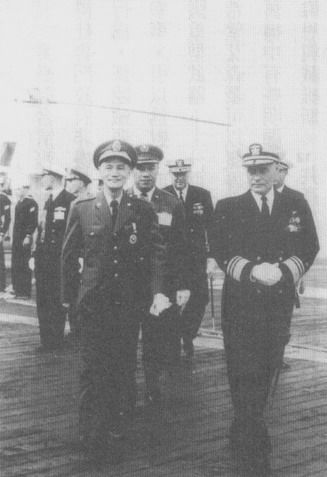
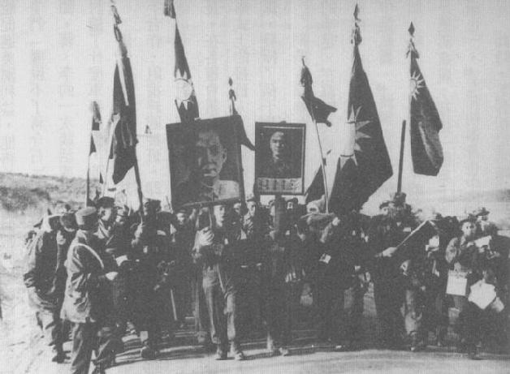
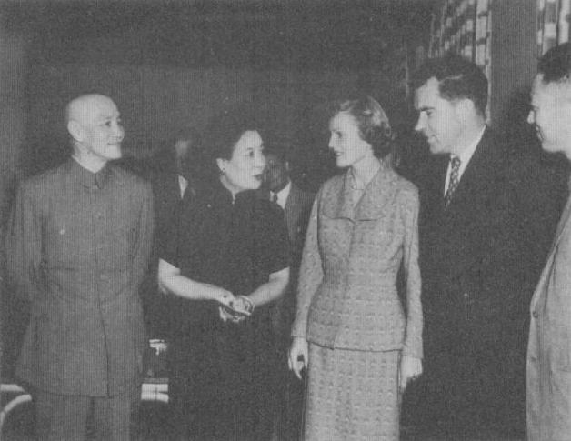
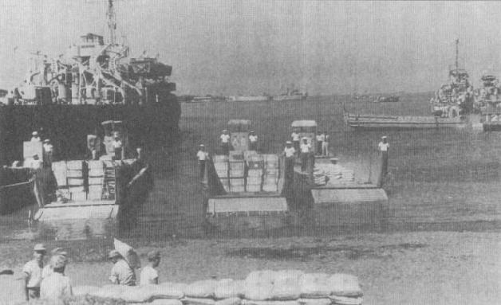
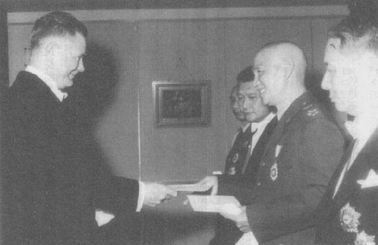
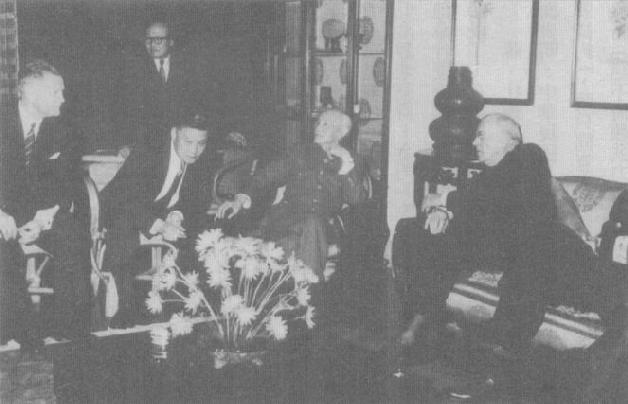

|
前一页 后一页 回目录 回主页 |
第十一章：操控保护人 虽然彼此都有相当疑虑，美方和国民政府之间的合作在1950年代初期却继续稳定成长。在韩国，国民政府军官翻译拦截到的中共战场通讯、准备心战传单，协助处理21000名中共战俘，尽可能鼓励（必要时极力施压）这些战俘投奔自由。中央情报局买下陈纳德的“民航空运公司”，民航公司在台、韩之间飞了15000班次，运送和支援国军翻译官、情报联络官，以及游说、策动被俘的中共志愿军之“教官”①。 ① 1996年5月，一名熟悉这些作业的中华民国空军军官在台北受访。受访者要求匿名。 可是长期而言，台湾和美国最重要的合作领域是它搜集大陆情报方面的角色。韩战开始时，美国在中国大陆之内根本没有好的情报来源。国民政府声称它有许多情报人员仍在大陆，而且吸收新血的潜力无穷。特务从外岛（特别是大陈）进出中国大陆，是搜集大陆低阶情报最常见的方式。但是当共产党强化户口管控和监视方法之后，即使这些特务也存活不久。 访谈1950、1960年代在台湾服务过的美国前任军官、情报人员和外交官，就可以发现大多数美国官员认为台北政府提供的由特务搜集来的大陆情资，基本上是没用的东西。在中国长大的著名中情局官员李洁明（James Lilley）在其回忆录中说，1960年代末期，中情局香港站获悉北京已破坏了台湾对大陆“所有”的情报作业①。对当时的许多人而言，岛上庞大的情报官僚似乎认为再怎么不可靠或甚至差劲的情报，总比没有情报好，于是就因循旧章，继续照办。 ① James Lilley（李洁明）, China Hands: Nine Decades of Adventure, Espionage, and Diplomacy in Asia (New York: Public Affairs, 2004), pp.79-80, 82-83, 85-86. 最有用的资讯来自非秘密的开放来源情报服务（Foregin Broadcast Information Service）对中国大陆电台的翻译，国家安全局秘密拦截中国大陆的军民电台、电话通讯，空中侦察中国沿海空防，以及出动U2间谍飞机。但是，中央情报局和国民政府情报人员都没能渗透到中共领导人的核心内圈，甚至省级单位也打不进去。 间谍渗透不行，对大陆骚扰攻击也没有成绩。中共介入韩战之后，杜鲁门秘密指示第七舰队，别去干涉国民政府对大陆及对中共航运的小规模行动。这些准军事行动包含能快速进出的突袭，如炸桥、夺取地方文件或绑架地方上的共产党干部。它们对中国的经济和军事准备没有造成太大伤害，也提供不出重要的资讯。但是，只要美国仍和中国在韩国激烈交战，这些动作对联合国认定是侵略者的中国，多少也算是一种小小惩戒。 国民政府针对大陆发动的唯一大规模攻势，是由李弥将军所执行。李弥底下5万官兵于1949年逃入缅甸，定居在偏僻的掸邦山区。他们与当地女子成婚，抢占地方帮派的海洛因毒品买卖。李弥保持和台北的联系，与美国政策协调处（前身为战略服务处）也有往来。1951年，李弥两度由缅甸反攻云南，动用2千名兵力，国军若干特战部队从台湾调来支援，还有政策协调处少数美国特务的协助。解放军很快打散进攻部队，他们退回缅甸，恢复对当地贩毒业的控制和保护①。对蒋而言，这支“国民党孤军”即使失败还是有好处——可以强化美国和中共之间的敌意，也能增进国民政府和美国各单位之间的友邦关系。对杜鲁门而言，缅甸作战也是一个安全的方法，可以让大家看到，正如共和党人要求的，他是在利用蒋的部队骚扰这头中国野兽。但是这项行动倒是促成美国情报作业的变动。虽然政策协调处全心全力支持，但中央情报局局长史密斯（Walter Bedell Smith）反对，认为后患无穷，后来的失败也导致政策协调处并入中央情报局。 ① Alfred W.McCoy, The Politics of Heroin in Southeast Asia (New York: Harper and Row, 1972), pp.171-178. 除了缅甸作业失利之外，蒋的部队在1949年之后的最重要之军事活动，就是封锁浙江和福建的沿海交通。这项海上活动以外岛为基地执行，于1951年上半年达到高峰：中共海军宣称国军干了137件“海盗”事件。国军船舰、飞机亦拦阻67艘和中国做生意的外籍船只，其中半数是由香港开出来的英国货船。一连好几年，蒋对闽、浙两省的海上封锁行动，制造出大陆的交通瓶颈，扰乱了华东沿海的渔业活动①。 ① John W.Garver（高龙江）, The Sino-American Alliance (Armonk, N.Y.: M.E.Sharpe, 1997), p.30. 美国在台湾的介入上升，宋美龄仍旧是她丈夫在美国事务上的主要顾问，这是她1950年回到台湾后担任的角色。持续扩编的中央情报局台北站以及国家安全局驻台办事处，驻台人员很快就膨胀到超过600人，其首长与蒋之间的高阶联络人也都是宋美龄。有一天蒋介石夫妇讨论到他们对美国间谍的观感，一致认为他们“不好相处”；他们似乎“没有耐心、爱炫耀”。他俩的结论是：“我们应该小心，让着他们。”① ① Chiang Diaries, Hoover, April 15, 1951, box 49, folder 15. 蒋氏夫妇似乎比往常更亲密，继续睡在同一寝室，只是用纱帘隔开各自的床；一起祈祷，并且手牵手在院子里散步①。第一夫妇的亲密还有一个面向，就是基督信仰在他们生命中日益重要。宋美龄一直信教，但不是特别虔诚，然而有一天，在读到耶穌基督被钉上十字架的故事时，她突然首度领悟到“基督为她受难”。在这番感悟之后，她“不仅理智上，而且整个人也更虔诚信主”。可是她的健康问题，如神经性皮肤炎、失眠和不定时的神经衰弱，又回来了②。她借宗教与国画怡情纾解。蒋注意到她“自朝到晚，不能罢手，已成画迷矣”，主题大部分是竹、兰③。有位侄儿说：“在上帝赐给她的所有东西中，能画画是让她最快乐的。”④ ① Laura Tyson Li, Madame Chiang Kai-shek (New York: Atlantic Monthly Press, 2006), p.340. ② 同上注，pp.343，350。 ③ Chiang Diaries, Hoover, February 12, 1952, box 49, folder 10. ④ 2004年5月，某位宋氏亲戚在加州受访。 当她出国时，蒋比以前更想念她。1952年8月，她搭乘泛美航空公司班机前往旧金山治病，他每隔几天就发一封电报给她，比起从前她出国时更加频繁。他在一封电报中说：“余念至深”；在另一封里又说：“接世电甚为忧闷，务期忍耐安静，服从医生之命令，勿噪勿急，多用祷告为盼。”① ① 蒋介石给宋美龄的电报，秦孝仪，《大事长编》卷十一，1952年9月2日，p.4702。 美台联合情报和军事作业扩大了美国在岛上的军事训练，增加经济援助以及其他美台关系，这使得杜鲁门政府非得在政治、外交上支持蒋政府不可。可是，蒋依然认为杜鲁门政府多数和台湾有关的行为，都隐藏要他下台的阴谋。因此当美国国会通过3亿美元对台湾军援法案，他觉得“在他人以为幸事，引以为慰，而余独以为耻辱加重，惟以淡然置之，何以为幸”①。即使1952年初第一批美国重型武器——142门75口径加农炮——抵达台湾，也改变不了蒋对杜鲁门团队的观感。他希望艾森豪可以赢得当年的总统选战。为了助艾一臂之力，他指示经国统辖的秘密警察翻出中国情治旧档中有些明显是假造的材料给麦卡锡的支持者，特别是二战与其后派驻中国的反蒋国务院官员如谢伟思与戴维斯②。共产主义的威胁是当时美国激烈选战的一个中心议题，艾森豪就声称他要废除雅尔达协定、打开铁幕、终结韩战，以及“放手”让委员长对付“赤色中国”。 ① Chiang Diaries, Hoover, August 10, 1951, box 49, folder 3. ② FRUS (1951), vol.7: Korea and China, p.1641; Robert P.Newman, "Clandestine Chinese Nationalist Efforts to Punish Their American Detractors," Diplomatic History 7, no.3 (Summer 1983): 205-222.

杜鲁门主政时期，蒋并没向美方大力推销他越来越高分贝的“反攻大陆、光复国土”的主张。1952年7月，他终于向到访的美国海军军令部长（相当台湾的海军总司令）费克特勒（William N.Fechteler）上将出示反攻大陆计划蓝图；费氏回到华府后仔细检视，认为这套计划“完全不实际”①。但是蒋着眼于军方及外省籍平民的士气，继续大倡“反攻”，也因为“反攻”是他统治台湾的依据。他认为“光复大陆”（不论是什么形式）终将必成，但是他没预期在有生之年“反攻”。他写下：“今后复国事业，照事实论，几乎不复可能，然而吾对革命复国之信心，毫不因此动摇。”他小心翼翼不让美国人以及自己的人民知道他有此务实的评估②。同样的，在他心里，韩战打得不顺、长期陷入僵局也证实他是对的，因为他藉着附加许多让派军至多成为长期发展方向的要求，避免了国军的参战。1952年新任太平洋舰队总司令雷德福（Arthur W.Radford）上将问他可否派出5万名国军参战时，蒋说他只能答应一个师（约1万人）。这件事后来再也没人提起③。蒋介石在美第7舰队司令毕莱克陪同参观 ① FRUS (1952), vol.14: China and Japan, pp.76-77; 秦孝仪，《大事长编》卷十，1951年1月31日，p.4463。 ② Chiang Diaries, Hoover, August 8, 1951, box 49, folder 3. ③ Chiang Diaries, Hoover, October 7 and 16, 1952, box 49, folder 18. 艾森豪赢了11月总统大选之后，已经搬到孔家在长岛宅邸的宋美龄，写信给这位候任总统表示：“你可以想像，我们有多高兴。”①可是，蒋提醒她不要过度支持，启人疑虑。他在日记中写下，如果艾森豪真的在欧洲、韩国和其他地方执行他在选战中所宣示的对峙政策，苏联也起而反抗，则莫斯科“只有加速战争一条道路”②。 ① Tyson Li, Madame Chiang, p.351. ② Chiang Diaries, Hoover, November 9, 1952, box 49, folder 19. 艾森豪向国会发表国情咨文演说之前不久，美国驻华大使馆代办蓝钦告诉蒋，艾森豪将命令第七舰队继续防卫台湾、不受大陆攻击，但要解除制止国军进攻大陆的命令。蓝钦显然奉了指示，接下来要求蒋承诺，若未事先和美国咨商，他不会发动国军攻打大陆①。艾森豪表面上“松绑”，暗地又把蒋捆住，但是只要不是公开为之，蒋并不介意有此一羁束。他遗憾艾森豪未事先和他讨论这件事，但还是觉得“惟对此一政策，吾人认为正确，而予以赞许”②。继他对杜鲁门团队的意图爆发恐慌症之后，现在他又落入不正常的幸福意识。他写下，艾森豪“对亚洲反共领导者之属望已自日本与印度转移于中国矣”③。然而蒋对美国新政府的喜悦维持不了太久。 ① Karl Rankin, China Assignment (Seattle: University of Washington Press, 1964), p.155. ② Chiang Diaries, Hoover, January 31, 1953, box 50, folder 2. ③ 同上注。 令鹰派共和党人又惊又恼的是，艾森豪降低美国的军事预算，选择继续杜鲁门的“围堵、不解放”政策，而且维持重欧轻亚的地缘政治观点——这也是令蒋介石长期以来一肚子怨气的政策①。为了弥补计划性降低传统兵力的政策，美国现在将仰赖“大规模报复”——意即核子武器。以核子报复对付传统威胁的策略，将大幅升高美国可能和中共冲突的风险和成本，但讽刺的是，它也因此增加美国和北京政府和解的诱因。蒋对任何发展都不觉得高兴，但他对这个议题不太发表意见。 ① Tom Wicker, Dwight D.Eisenbower (New York: Henry Holt and Company, 2002), p.30. 在明显是艾森豪完全授意下，新任国务卿杜勒斯对台采取类似杜鲁门和艾奇逊的双轨政策。他的第一部分优先是防卫台湾，推动台湾成为（中国式）自由市场，以及运用台湾做为情报平台和特种作战基地，以压迫和骚扰大陆。但是第二部分的战略目标则是保持美国最终和中国大陆修好的可能性，促成两岸终止敌对行为，然后推动两个中国或一中一台的安排①。 ① Nancy Bernkopf Tucker（唐耐心）, Taiwan, Hong Kong, and the United States, 1945-1992 (New York: Twayne, 1994), pp.33-38. 艾森豪在他的国情咨文中也暗示，必要时美国将使用手中一切武器去结束韩战。艾森豪的用意是让共产中国明白，除非韩战快快停火，否则他将“毅然决然地放宽武器的使用”，而且战事也不再只是局限于朝鲜半岛①。在发表完国情咨文之后，艾森豪又秘密给北京传递讯息，暗示如果韩境作战不停止，他将批准使用核武②。多年之后，艾森豪告诉詹森总统，他透过两个私人管道——印度总理尼赫鲁以及蒋介石——传递这个警告③。委员长很高兴能受托传递讯息。他可能指示经国透过安全管道传话给老朋友周恩来；蒋经国颇有可能利用以记者身分住在香港的曹聚仁，担任传话给中共的秘密中人④。毛收到美方讯息的即刻反应就是派手下头号核子科学家钱三强，去要求斯大林提供核武给中国做为吓阻工具⑤。 ① Dwight D.Eisenhower, The White House Years: Mandate for Change (Garden City, N.Y.: Doubleday, 1963), p.181. ② 同上注，p.180。 ③ White House Memorandum of Conversation between President Johnson and former President Eisenhower, FRUS (1964-1968), vol.2: Vietnam, p.300. 艾森豪威尔告诉詹森“我上任后已传了3个讯息给（北）韩国人和中国人。一是透过尼赫鲁，一是透过蒋介石，另一是透过参与停火谈判的较低阶人士。” ④ Chen Jian（陈兼）, Mao's China and the Cold War (Chapel Hill: University of North Carolina Press, 2001), p.171. ⑤ 周明主编，《历史在这里沉思》，共三册（北京：华夏出版社，1987），p.290，引用Jung Chang（张戎）and Jon Halliday, Mao (New York: Knopf, 2005), p.374. 1953年2月28日夜里，斯大林告诉他的核心左右手，他已决定建议北朝鲜和中国在谈判中“争取最有利的条件”。看来他并没理会毛泽东索取核武的要求。5天之后，斯大林疑因脑充血而撒手人环。次日晚间，周恩来已赶到莫斯科和马林可夫（Georgi Malenkov）、赫鲁晓夫（Nikita Khrushchev）和不久即遭枪决的秘密警察头子贝利亚（Lavrenty Beria）会商。这几位苏联新领导人告诉周恩来，该是结束韩战的时候了。战俘问题是停火协定迄未达成的障碍，周和俄方迅速决定共产党方面将提议由中立的独立国家来决定双方战俘的意愿——这正是美国和联合国方面一年多前的提议①。 ① Chen Jian（陈兼）, Mao's China and the Cold War, p.113. 新闻报导开始指出，艾森豪将依杜鲁门的条件——韩国南北分治——去取得和平。台湾问题说不定也会套用此一两个中国模式去解决，这对蒋无疑是个诅咒。他要蓝钦问美国政府将如何面对“为韩战而死之官兵，以及韩国之空前牺牲耶”①。蒋当时不仅把杜勒斯写成“此种政客投机之流”，也认为艾森豪对中华民国的政策“与过去无殊”——意即有心换下蒋介石，设法把毛泽东化为另一个狄托②。到了5月，他已认定艾森豪没有“常识”，让英国人牵着鼻子走，就像往常亲英的美国领导人一样③。 ① Chiang Diaries, Hoover, April 15, 1953, box 50, folder 5. ② Chiang Diaries, Hoover, April 10, 18, and 20, 1953, box 50, folder 5. ③ Chiang Diaries, Hoover, May 25, 1953, box 50, folder 6. 5月25日，有关交换战俘和永久停火的协议原则出炉。三周之后，强烈反对两韩分治构想的南韩总统李承晚，允许27000多名反共的北朝鲜战俘“逃亡”，并且威胁要把南韩部队撤出、不接受联合国节制。共产党方面的反应是立刻攻击南韩前线单位，和平协议似乎就要瓦解。6月22日，蒋接到李承晚叙述“美国如何出卖韩国”的信，不禁“不寒而慄”。他在日记里显然暗指美国，写下“帝国主义之强权政治无非一丘之貉”，他必须试图帮助李承晚“救其危而促其成”，但他也“更为己危”，担忧这些发展对他本身的影响①。 ① Chiang Diaries, Hoover, June 23, 1953, box 50, folder 7. 蒋拍发两封电报给艾森豪，敦促美国在韩战停火协定生效之前，与韩国签订互助安全协定①。但是他也依照日记所述感受，回复李承晚一封同情的信。华府显然拦截到这封信并解码成功，把它解释为蒋鼓励李承晚坚持立场。杜勒斯大动肝火，发信警告蒋：如果李承晚不合作，美军将撤出韩国——甚且，若走到这一步，美国也会“重新考虑对台湾之政策”②。这是很令人吃惊的威胁。蒋认为他只是想排难解纷，但杜勒斯和艾森豪现在却“威胁”他③。蒋“日日夜夜”替李承晚祈祷，但是艾森豪又致函李承晚，再次警告除非他“立即且明确地”合作，否则联合国指挥部“将启动另外的安排”④。次日，蒋拍电报给李承晚，建议他，如果得到在正式停火后有绝对保障的美韩安全条约、如果美国不要求朝鲜战俘回营，则李应该接受停火计划⑤。 ① 同上注。 ② Chiang Diaries, Hoover, June 25, 1953, box 50, folder 7. ③ Chiang DIaries, Hoover, June 30, 1953, box 50, folder 7. ④ Eisenhower, White House Years, pp.185-187. ⑤ Chiang Diaries, Hoover, July 1, 1953, box 50, folder 8. 李承晚接纳此一建议，不过他又设法逼美方承诺：如果他合作，美国将大幅增加对南韩的军事与经济援助。甚且，虽然停火协定于8月25日起生效，李承晚却从未正式签署它。蒋很佩服他这一招，认为李承晚是“最认识美国之革命家”①。 ① Chiang Diaries, Hoover, July 12, 1953, box 50, folder 8. 在极端情况下，艾森豪显然会毫不犹疑地割舍一个重要但又依赖美国的反共盟友。蒋很清楚地看到此一教训。但是他还是和李承晚一样，认为必须在表面上显得独立自主；7月16日，就在李承晚危机期间，他没和美国咨商就下令国军部队登陆中共控制下的东山岛；东山岛是金门以及中共掌控的汕头港中间比较大的岛屿，居民约75万人。蒋的用意或许是想把东山岛纳入国民党掌控，但更有可能只因关键盟友美国威胁要弃他而去，他非得展现自主的骨气不可。不论动机如何，他的努力并没有成功：解放军很快就反攻，逐退国军①。 ① Chiang Diaries, Hoover, July 17 and 31, 1953, box 50, folder 8. 中华人民共和国国防大学1991年一份出版品声称，美国批准这项攻击，有1万名国军部队参战，死了3000人。Garver（高龙江）, Sino-American Alliance, pp.76-77. 一 毛泽东可以宣称打赢韩战，因为他的解放军部队把美国领头的盟军逐出北朝鲜，还在38度线附近打个不分上下。可是，共产党方面想要夺占南韩的目标并未成功，毛在战俘的解决上也丢了面子，更被赶出南韩。甚且，国民党控制的台湾以及蒋介石现在暂时安全无虞。就苏联来讲，韩战耗费不貲，但从它的角度看来，每一块钱都很值得。中国现在和美国的距离更为疏远，也更依赖苏联。 某些国民政府官员担心，韩战停火等同反共阵线瓦解，但是蒋“觉得满意”。他认为，韩战的结果固然有喜有忧，但情势已使艾森豪“确实”投入防卫台湾（甚至要增派兵力到超乎自卫所需的水平），同时还要帮助台湾在经济上有所成就。此外，在可预见的将来，北京觊觎联合国安全理事会席次的机会已经成为过去，联军总部所俘虏的21000名战俘当中有14000人决定投奔台湾，在政治上和精神上都是巨大胜利①。 ① 秦孝仪，《大事长编》卷十二，1953年6月19日，p.5268。

艾森豪的想法恐怕不像蒋所想的那么正面。艾森豪认为，韩战停火之后，理想上美国应该重新检讨它的中国政策，包括联合国的中国代表权问题①。他怀疑对中国“严格禁运”有什么意义，一度告诉国家安全会议，若能促进美国利益，他将销售喷射战斗机给毛泽东。但是艾森豪、杜勒斯以及其他资深顾问也同意，他们“摆脱不了蒋介石”②。这种对委员长的偏见，和杜鲁门、艾奇逊的观点并没太大差异。11月间，蒋、李的一次谈话或许可以彰显当时的怪诞情势，蒋显然半开玩笑地建议，若是美国人问起他们讨论了什么军事计划，他们可以说两人讲好同时一起反攻。李承晚欣然同意③。14000名韩战的中国战俘决定投奔台湾，在抵台后他们拿着孙、蒋的肖像与国旗、党旗游行庆祝 ① Stephen Ambrose, Eisenhower, vol.2 (New York: Simon and Schuste, 1984), p.99. ② State Department Memo of NSC Meeting, August 14, 1958, FRUS (1958-1960), vol.19: China, p.53. ③ Chiang Diaries, Hoover, November 28 and 29, 1953, box 50, folder 12. 尽管两蒋父子在国内外的政治地位更加坚强，他们依然忧虑若是委员长去世，陈诚和孙立人会联手合作，阻挡经国接班。即令如此，蒋在1953年5月擢升孙立人为上将，翌年再次任命他为陆军总司令——对一个涉嫌包庇共产党间谍的将领来说，这是值得注意的发展①。陈诚继续担任行政院院长，在各种会议中继续挑战蒋；蒋也在日记中责备陈诚。不过，次年蒋仍提名陈诚出任副总统，成为形式上的接班人。鉴于蒋对两人颇有顾忌，这两件人事安排虽然有点怪，但它们事实上都经过仔细盘算，发挥了孙子兵法里对付强大内部敌人的精神。 ① Boorman, Biographical Dicitionary, vol.3, p.167. 同时在这几年，蒋的参谋总长周至柔正与委员长的舅子毛邦初斗争——毛是蒋经国生母毛福梅的手足。在苏联受过训的毛邦初于1937年奉派为空军副总司令，并自1943年起担任派在华府的（中华民国）空军采购团团长。1951年3月，毛邦初指控周至柔借着向美国采购飞机燃油中饱私囊①。蒋调查后发现，尽管最近在军中推动财务改革，受质疑的款项的确存入周至柔在香港的个入账户里头，而且空军的许多帐涉及“舞弊不法之点”。但是在重大案件上，蒋一向重视效忠而不是追诉贪腐；在这一个案上，蒋决定为了保护周至柔和空军的声誉，必须不起诉他，“以期有以改过也”②。毛邦初本身也中饱私囊；美国法院最后裁决台北政府有权自毛及其瑞士银行取回600万美元。此时，毛邦初已逃离纽约，和他的美国秘书在墨西哥被捕。坐了2年牢之后，1954年获释，因为墨西哥法院裁定毛之所以被控告是“政治”因素③。 ① Chiang Diaries, Hoover, March 9, 1951, box 48, folder 15. ② Chiang Diaries, Hoover, March 11, 17, 31, and April 6, 1951, box 48, folder 15. ③ New York Times, August 30, 1951; September 15, 1961; and October 16, 1952. 虽然回到大陆的梦想以及坚守台湾是中国一部分的原则，合理化了国民党对台湾的控制，国民政府能存在主要是因它实施警察国家的做法。1950年代初期，尽管来自台湾本省人民族主义的威胁还未成气候，但政府仍继续搞“白色恐怖”。1990年代，法务部告诉在野党立法委员，那个时期的安全档案早已焚毁，但是从1949年起至1987年解除戒严这段时期，官方统计被捕的人数是29407人。（如果在这段期间内美国也有同样比例的人民被捕，其人数就会高达615000人。）① ① 1996年6月4日，谢聪敏在台北受访。谢说，有位国民党立委告诉他的数字还更高，有6万至7万人之多。 经国领导的反情报机关网每年把600多人定罪为间谍或颠覆分子；当经国1953年访问华府时，杜勒斯温和地建议他改善台湾的人权。次年，在台湾的秘密逮捕和定罪却有增无减，但是1955年终于下降①。根据台湾省主席吴国桢本人的证词，他是当时胆敢批评政治恐怖的少数官员之一。吴国桢后来写说，1952年1月他晋见老蒋总统，抱怨“秘密警察横行”，也提出警告说，如果经国继续领导秘密警察，必将“成为人民仇恨的对象”②。蒋在当时的日记中没有提到这桩控诉，只写说吴威胁的不当行径太超过，“又恐其神经失常，发生狂病为虑。”③ ① 1954年，保安司令部宣布，在当年头三季共破获858宗颠覆案，涉案人有1745人，其中597人判定有罪，推估一整年就有750人。National Intelligence Estimate, "Morale on Taiwan," April 16, 1955, FRUS (1955-1957), vol.2: China, p.484n. ② K.C.Wu（吴国桢）, "Formos," Look, June 29, 1954, pp.39-43. ③ Chiang Diaries, Hoover, January 17 and 19, 1952, box 51, folder 2. 一年多之后，吴国桢事件终于浮上台面。1953年3月，吴国桢称病请辞，但蒋一方面要他再等一个月，一方面又在日记中声称吴“不能诚实”，再次怀疑吴神经有问题①。4月间，蒋同意接受吴的辞呈，但次日又写下吴又来信悔过。然而根据吴的说法，蒋对他出言威胁，不久又发生一起车祸，使得吴相信的确有人要取他性命②。同时，宋美龄从纽约回来，替吴讲话。次月，吴国桢夫妇拿到护照，前往美国。次年，吴发表文章、演讲，公开和蒋决裂，指控经国的秘密警察从事私刑和勒索③。在台湾受到控制的新闻界则声称，吴因涉贪渎将被起诉才急急出国；但是很少有人相信这种说法，在美国尤其如此。同年稍后，蒋批准吴国桢16岁的儿子出境，去美国和双亲会合。吴指控秘密警察横行霸道有根有据，但他的性命是否有危险、被控贪渎是否有道理，就不晓得了。总之整桩事件让宋美龄相当忧愁，蓝钦夫人去拜访她，发现她非常忧郁，暗示吴国桢事件乃其原由④。不久之后，蒋劝她再到美国就医。她在1954年4月29日离开台北，住进熟悉的旧金山佛兰克林医院，病因据说是过敏症。蒋写道他对宋美龄“一日不见如三秋矣”⑤。 ① Chiang Diaries, Hoover, May 4 and 6, 1953, box 51, folder 4. ② Chiang Diaries, Hoover, April 9-11, 1953, box 51, folder 5. ③ "The K.C.Wu Story," The Reporter, April 27, 1954, pp.18-20. ④ AmEmb Taipei cable to Department of State, April 21, 1954, National Archives, RG 59, U.S.State Department files, 1950-1954, box 4218. ⑤ Chiang Diaries, Hoover, April 20 and 29, 1954, box 50, folder 18. 韩境停火5个月之后，艾森豪核准的一份国家安全会议政策文件，表明美国将在没有直接涉及到美军的情况下，“鼓励和协助中国国民政府……突袭中国共产党的领土和商业。”美国禁止国军攻击大陆港口内的船只，以及明显非军事的目标，如客用轮渡等，但是实质上准许国军海军继续拦阻、捜索台湾海峡的外国船只，并没收任何要运往中国的“战略物资”。美国在美、中（毛）停止于韩境敌对之后仍鼓励这类行动，加上它还继续以第七舰队防卫台湾，这表示在大部分已休止、但依然很恼人的中国内战当中，美国支持国民党。美国军事援助顾问团已几近直接介入，首次派遣官员到外岛，配合中央情报局人员，规划针对中共的小型攻击和骚扰行动①。 ① FRUS (1952-1954), vol.14: China and Japan, p.115. 蒋很欣慰美国对大陆采敌视政策，但是他对实际行动的批准可十分小心。坚决支持他的蓝钦向华府提出警告说，美、中（蒋）联手行动只不过是“拿羽毛掸子轻碰老虎罢了”，一旦中国对发起突袭行动的外岛展开攻击，世界舆论可能还会觉得师出有名①。根据派在大陈服勤的美国军官之说法，国军的秘密活动本质上等于在变相鼓励在本地早已肆虐的海盗②。蔡斯将军把手下负责协调这些活动的军官，称做“海盗事务副总裁”③。美国人武装的机动渔船会劫持中国沿海的中国渔船和其他小型船只，带走船上运载的食品，把耐久品送到香港脱售。有时候，国军突袭者会对抓来的渔夫宣传说教一番才放人④。国军不肯组织更认真的行动对付大陆或中国船运，也让派驻外岛的美军陆战队备感挫折。美方相信国民政府担心，若是“真正伤了中共”，解放军会把他们赶出经受不起攻击的大陈⑤。 ① 同上注，pp.363-364。 ② 1995年11、12月，前美国军官和中情局官员的访问，受访者要求匿名。 ③ Tucker, Taiwan, Hong Kong and the United States, p.64. ④ 1996年4月17日，某位曾在大陈岛服役的美国陆战队军官，在维吉尼亚州阿灵顿受访。 ⑤ 同上注。 和杜鲁门时期一样，对蒋和艾森豪而言，台湾海峡的特别行动可向国内支持者交代，他们的确有针对中共采取行动。艾森豪和杜勒斯也认为它可以安抚蒋的“反攻”决心。对蒋而言，它增加美、中之间的敌意，培养中情局和美国军方重要的亲蒋派之成长，也让经国的特别行动部门在资金与器材设备上源源不绝。到头来，这项秘密活动支用的几百万美元，倒是在帮许多机构和个人作嫁。某位前任中情局官员就回忆说，这个秘密关系变成“国民党金钱、武器、设备和训练的聚宝盆”①。 ① 1995年及1996年间，若干位1950年代及1960年代曾在台湾服役的中央情报局及军方情报官，在华府地区受访。 既然被“松绑”，蒋似乎就有义务向美国新政府正式提出全面反攻的计划。1953年6月，透过蓝钦大使，他首次向华府提出撼动历史的反攻大陆方案。当然蒋明白，在韩战此一冗长昂贵的“有限”战争结束前夕，艾森豪不会乐见对中国发动“大规模”战争。因此他提议的大反攻必须以3到6年准备才能展开，准备期间美国要武装及训练60个师的国军部队。最终目标是以国军60万雄兵进行诺曼第式的登陆作战。起先蒋说只需要美国的后勤支援，后来有时候又说还需要美国的空中掩护和海上运输——这差别可大了①！他一再重申他的基本论调：在本地区冲突之根源——共产中国——被铲除之前，远东不会稳定、和平②。如前文所述，私底下他认为他有生之年看不到此一反攻会实现。 ① FRUS (1952-1954), vol.14: China and Japan, pp.195-196. ② Rankin, China Assignment, p.162. 9月（1953年），蒋经国第一次赴美国访问，走遍很多城市，也到了华府会见总统、国务卿、中情局局长等人。华府长期以来认为他是父亲的内定接班人，但也是个神秘人物。他给各界的印象极佳，没有提起反攻大陆的议题，也没要求更多援助，只呼吁双方更加紧密合作。 蒋经国从华府回台湾后不久，副总统尼克松偕夫人访问台北，做两蒋的贵宾。委员长和尼克松长谈7个小时，有时候只有一名译员随侍，两人单独密谈。尼克松在回忆录中告诉我们，他认为东道主提出的反攻计划“完全不实际”，但是又觉得他“不能当面告诉蒋，由他重新统一中国的机会实质上并不存在”。尼克松说，他只能“明白表示美国兵力不能用来支持（蒋）可能发动的任何反攻。”①如此斩钉截铁但又礼貌地拒绝，乃是艾森豪政府迄今对美国拒绝直接参与“反攻”最明显表态的一 次。从蒋的日记看不到他对尼克松此话感到意外或挫折，因为他只在意美国会不会公开发表声明。同时，蒋在公开演讲仍保证将在不久的未来恢复大陆的“自由与光明”②。 ① Richard Nixon, The Memoirs of Richard Nixon (New York: Grosser and Dun-lap, 1978), p.126; FURS (1952-1954), vol.14: China and Japan, pp.210, 126. ② New York Times, January 1, 1954.

缅甸国军游击队入侵中国的活动逐步升高，缅甸政府公开吁求美国设法终止此一侵略行为。1953年初，杜勒斯向蒋施压，要他撤出李弥部队，但是蒋还是老样子，回应干涉的方式就是“严令接济李部，空运加紧，以鼓其士气”①。当蒋经国在华府时，艾森豪对他重提这个议题，杜勒斯又以严峻的措辞发函向委员长要求，但蒋还是不为所动。最后，联合国大会在1953年12月谴责台北当局在缅甸的活动，然后在杜勒斯更强硬施压下，蒋终于下令撤出5000多名国军士兵和眷属。然而抵达台湾的人，据说有许多是当地山地人而非汉人。事实上，蒋和中情局仍把大部分国军战士留在缅甸当游击队，他们认为，保卫中南半岛不遭赤化的斗争很快就要来了，这支部队或许可起作用②。蒋介石、宋美龄夫妇接待美国副总统尼克松夫妇 ① Chiang Diaries, Hoover, February 21 and April 3, 1953, box 51, folder 3, 5. ② McCoy, Politics of Heroin, p.173. 艾森豪主政时期，蒋多次向美方发出警告，若是放弃外岛将导致台湾已建立的体制瓦解。但是他本人并不是真心相信此一末日预言，因为他自己就在1950年7月两度“紧急”下令自金门、马祖撤退。艾森豪、尼克松和美方高阶领导层有许多人认为委员长高唱“反攻”乃是痴人说梦。但是白宫和政府其他部门倒是流传一个莫名其妙的想法：美国若是不协助防卫这些小岛，或是逼蒋介石放弃它们，台湾的民心士气将迅速崩溃，蒋将被手下将领推翻——或更糟，他甚至可能会投向毛泽东①。 ① FRUS (1952-1954), vol.14: China and Japan, p.335. 不过我们可以这么说，蒋从来没有认真想过放弃他在台湾的安全生活和权力地位，以及他基本的政治、宗教信仰，去生活在共产政权下。除了2亿美元的经济援助之外，蒋已得到美方5亿多美元的军事援助以及预算支持；另外针对武装部队，另有5亿美元军援已经通过正要上路。他在1965年向周以德表示，他觉得台湾做为他的避难所是一种天意，使他终于能够打造一个有秩序的繁荣社会，实现替中国未来建立楷模的梦想。同样的，在美国人的大方援助下，蒋底下的中、高阶军官也不会放弃日益稳定、舒适的生活，让自己置身于共产党掌控之下；何况这个共产党最近才杀害了约100万名地主，以及许许多多旧体制的人！美国情报界对蒋介石治下的台湾一再分析，结论是：只要美国保卫台湾的誓言有其可信度，岛上极大多数外省人“可以接受在台湾安身立命”①。 ① SNIE 43-1-57, FRUS (1955-1957), vol.2: China, pp.515-518; NIE 43-2-57, FRUS (1955-1957), vol.2: China, pp.585-593. 美国1954年9月的国家情报评估还有另一个说法：如果国民政府认为他们的利益和美国“日益歧异”的话，“相信会导致他们（指蒋介石）采取措施，希望把美国和共产中国卷入战争。”①蒋的确相信民主国家和共产世界无可避免终将爆发世界大战，使国民党因此渔翁得利，但对于这场大规模冲突的结局，他也没有绝对把握。他并不相信，如果爆发大战，美国民众——亦即美国政府，不论是共和党当家或民主党执政——会坚持到底。他对史迪威时期、马歇尔调处、杜鲁门艾奇逊时期的美国对华政策之观感，以及近来和艾森豪、杜勒斯就韩国、缅甸的痛苦经验，使他认为美、中大战可能又会陷入僵局，结果成为美、中和解修好的诱因——这一来他和台湾不就更糟了吗？此后的十多年甚至更久，蒋的一些决定都能说明他曾有此认定。不过偶尔，他在言行上还是表现一副想启动全球大战的样子。 ① FRUS (1952-1954), vol.14: China and Japan, pp.641, 642. 二 到了1953年中期，胡志明已控制了越南大部分的农村地区。中国对越盟提供的武器援助每个月约1000吨，解放军许多技术人员和顾问也在胡志明部队中秘密工作。韩战于7月告停，毛泽东把更多的大炮和高射炮投入越南。美方为了反制，对法军的援助达到10亿美元。艾森豪认为情势“还不紧张”，但蒋对法、美处理中南半岛危机则另有看法①。1953年11月，他在接见蓝钦大使和一群美国访客时，很坦诚地表示美国“在中南半岛投下资源却一无所获”。他说，若不针对根源——共产中国和苏联——下手，远东绝不会稳定。让美国访客吃惊的是，他铁口直断美国试图在越、柬、寮救法国“纯粹白费力气”。在美国访客一再追问下，蒋显然察觉自己话讲过头，改口同意依当前局势，美国应该试图协助法国——但实际上他依旧相信失败的机率相当高②。 ① Eisenhower, White House Years, p.338. ② U.S.Embassy Taipei radiogram to SecState, November 30, 1953, FRUS (1952-1954), vol.14: China and Japan, p.332n. 1954年3月，越盟包围奠边府，整个中南半岛的未来突然悬于这个围城的命运。中国人急忙又送100门大炮、6万发炮弹到前线，中情局也从台湾出动民航公司飞机向奠边府空投物资①。雷德福将军和法国军方提议动用三枚核子弹打破包围。尼克森和杜勒斯似乎同意这个构想，但是在艾森豪看来，要以如此可怕的行动在一场未宣而战的战争中去拯救一个殖民政府，实在交代不过去。他在国家安全会议开会时表示：“你们疯了吗？这些可怕的东西，我们不能十年内第二度用在亚洲人身上！我的天呀！”② ① Chen Jian（陈兼）, Mao's China and the Cold War, pp.134-135. ② Ambrose, Eisenhower, p.184. 艾森豪一度考虑要求蒋介石出兵，但旋即因顾虑中共介入而放弃这个念头。同时，蒋在日记中也认为法国必败、美国的策略没用①。不过他继续配合美方的要求。苏联和西方盟国为了谋求解决方案同意在日内瓦召开会议，讨论韩国和越南问题。这是中华人民共和国首次出席国际会议，周恩来代表中国与会。但是为了确保攻克奠边府，毛泽东赶紧又把经中国训练的两个越南炮兵营调到前线，还指示解放军顾问：“别省炮弹；你们要多少有多少，我们会供应足够的炮弹。”② ① Chiang Diaires, Hoover, April 2, 10 and 17, 1954, box 50, folder 18. ② Chen Jian（陈兼）, Mao's China and the Cold War, p.137. 1954年5月7日，日内瓦会议进行当中，奠边府法国守军投降，白宫暗示它可以接受越南分治的构想。共产党方面也顾虑，若是坚持在中南半岛全面胜利、继续作战下去，“最坏的状况”就是届时可能发生美国干预①。蒋认为不论冲突是如何完结，它都会有利台湾准备反攻，意即美国会增加对台军事援助②。因此经过数星期休会，各国外交部长再次开会，于7月21日签署协定，以北纬17度为界划分南北越，北方为共产党控制，南方为非共产范围，并于两年内举行公民投票产生统一的政府。杜勒斯没签署此一协定，并且很出名地拒绝和周恩来握手。杜勒斯打从一开始就决心不执行大家讲好的全国选举。蒋告诉美国人：“不论是……南北分治、或举行大选，或是承认寮国和柬埔寨中立，最后的结果将是共产党接管了整个地区。”③经过20载痛苦岁月后，他被证明是对的。 ① 同上注，p.139。 ② Chiang Diaries, Hoover, May 1, 1954, box 50, folder 19. ③ Amemb Taipei Radiogram to SecState, FRUS (1952-1954), vol.14: China and Japan, p.490. 三 自从上任以来，艾森豪团队没经太多深思就背离杜鲁门、艾奇逊的政策，预备协助蒋介石防卫金门及其他外岛。1953年11月，国家安全会议一份文件在未保证出兵的情况下，明定美国将“鼓励和协助中华民国政府防卫国军据守的外岛，对抗共产党的攻击，并且进袭中共领土和商务。”①一年之后，韩国、越南冲突均已停火，美国政府更坚定要划一道线，不让共产党在领土上有寸土之进展。 ① Garver（高龙江）, Sino-American Alliance, p.115. 1954年，毛泽东发起宣传战，高喊“解放台湾”。中共内部文件强调，以金门为中心制造危机，用意主要是提高中国人民政治意识，激发国内社会主义建设的革命热情①。或许在毛心中更重要的是，威胁外岛在于表明，即使莫斯科在全球摆出和平共处的新姿态，并不代表中国的内战已经结束，或是中共接受台湾与中国的分裂②。解放军开始囤积补给品以备大举炮轰金门、马祖③。在紧张上升之际，杜勒斯于马尼拉召开记者会，表示美国有足够理由断定，防卫台湾“包含”保卫外岛，暗示美国可能会直接介入防卫外岛④。 ① Chen Jian（陈兼）, Mao's China and the Cold War, pp.168-169. ② He Di（何迪）and Gordan H.Chang（张少书）, "The Absence of War in the U.S./China Confrontation over Quemoy and Matsu in 1954-1955: Contingency, Luck, Deterrence," American Historical Review 98 (December 1993); Tucker, Taiwan, pp.38-42. ③ Chen Jian（陈兼）, Mao's China and the Cold War, pp.168-169. ④ FRUS（1952－1954）, vol.14: China and Japan, p.562. 1954年9月3日，解放军朝金门发射数千发炮弹，国军炮兵也从深藏在花岗岩山壁的坑道中推出美制大炮予以反击。第七舰队从横须贺出海；大西洋美国海军主力舰亦兼程赶往太平洋①。从事后的发展来看，毛泽东很显然并无意入侵金门或马祖，它们的地理位置十分靠近中国沿海，加上从未如台湾和澎湖割让给日本，成为蒋介石和大陆的重要政治联结。中共领导人和蒋介石一样，都不想切断这份关联。 ① New York Times, September 5, 1954. 危机集中在面积153平方公里的金门。它除了花岗石，还有水稻田和一座机场。蒋认为若有适度的补给，它可以挺得住长期包围。但若没有美国的海、空军介入，他和美国人都晓得解放军可以切断它的海、空支援①。杜勒斯离开菲律宾之后，于9月9日在台北短暂停留5个小时。这是蒋第一次见到这位曾和他因滇缅边区国军部队吵过架的美国国务卿，他比往常更加紧张。蒋虽然笑容满面，脚却抖动得比平常更厉害。当他提起美国和中华民国签订安全条约这个议题时，杜勒斯只答说：还有“某些困难”挡路。但稍后在记者会上被问到解放军攻击外岛的事，杜勒斯宣称台湾“并不孤立无援”②。蒋起初很满意。他认为杜勒斯“顾大体尚可”。但事隔几天，他又认为杜旋风访台是“耻辱”，而且没有诚意③。 ① 1961年，我和学中文的一些同学到金门，曾经放过空飘气球，带着肥皂和传单，到大陆。风向一变，中共方面也朝厦门空飘带着肥皂的气球。 ② New York Times, September 13, 1954; FRUS (1952-1954), vol.14: China and Japan, p.582. ③ Chiang Diaries, Hoover, September 9, 10, 11, and 30, 1954, box 51, folder 3, 4. 虽然炮击金门的第一天就有2名美国军人被打死，国军方面的伤亡不大，连蓝钦大使都形容解放军“几乎是白费力气”①。可是，国军却出动飞机轰炸厦门港口及其周遭设施，突击队也攻击沿海各地②。9月12日，国军飞机深入内陆50英里轰炸目标，两天之后台北宣称击沉了一艘1000吨的油轮。怪的是，解放军的米格15由韩战老手驾驶，却没挑衅比它弱而且还是二次世界大战留下来的国军F-47雷霆机。毛显然没全力投入金门战役，更没想到要进犯台湾。 ① Rankin, China Assignment, p.209. ② New York Times, September 6, 7, and 8, 1954. 即使如此，美国国防官员、媒体，没多久艾森豪和杜勒斯也开始认为毛泽东事实上决心占领金门。从9月12日至11月2日，国家安全会议历次会议，除了陆军李奇威（Matthew Ridgeway）将军外，海军上将雷德福及所有联参首长，都建议立刻派美军部队到金门及其他外岛，和蒋介石联手轰炸大陆，必要时甚至利用核武去逐退中共。蒋现在有40％的部队驻防这些小小外岛，因此这些地点若是沦陷，对台湾安全会是一记重击，虽然也称不上致命①。 ① FRUS (1952-1954), vol.14: China and Japan, p.829. 杜勒斯直到在国家安全会议上才强调只有动用核武，美国才能打赢中国；但同时他和艾森豪也对与会人员表示若和中共发生战争，后面还有个苏联要打①。这些想法使急着讨论的状况多了现实考量；虽然他们都同意早先的政策文件和公开声明，承诺美国要防卫外岛，艾森豪、杜勒斯和国防部长威尔森（Charlie Wilson）却突然一致表明，他们不认为金门和马祖值得防卫。 ① 同上注，pp.833-835。 艾森豪一度下令美国不会在实质上用武力防卫这些外岛，但蒋如果被迫放弃金门可能会倒戈的说法也让艾森豪十分不安。他很烦恼，委员长若是被逼急了，会“出卖美国，放弃福尔摩莎”——换句话说，带着他的武装部队投向毛泽东①。一直到1955年2月，艾森豪都还在引用中情局的调査报告，担心“蒋的军队准备全员投向共产党的可能性”。中情局在华府的分析人员与国家情报评估立场一致，对国民政府军民领导人的士气持乐观态度，根本不信这些谣言。这些谣言可能由台湾高级官员向中情局人员散播，希望为国民党争取更多支持②。但是，白宫国家安全会议却相信它。 ① 同上注。 ② 1955年2月1日，艾森豪威尔在给葛伦瑟将军（Gruenther）的信中提到这个报告，见Ambrose, Eisenhower, p.236. 赫鲁晓夫于10月1日抵达北京访问，决心与中国建立更密切的关系。首先，他撤销1950年毛泽东和斯大林签订的一切秘密协定（包括苏联占领旅顺港），并且答应供应更多的武器工厂，以及5亿2千万卢布的新贷款。毛提起正在进行中的金门危机，再度要求苏联协助中国发展核武。赫鲁晓夫答说，中国在苏联的核子伞下安全无虞，但是他答应考虑提供一座研究用的反应炉①。中苏联合公报宣称：“团结行动保护两国的安全。”② ① Evgeny A.Negin and Yuri N.Smirnov（当时参与核武研发的苏联核子物理学家）, "Did the USSR Share Atomic Secrets with China?" Parallel History Project on Cooperative Security website, http://www.php.isn.ethz.ch, accessed March 15, 2008. ② New York Times, October 13, 1954. 同时，杜勒斯鼓励纽西兰向联合国安全理事会提案，呼吁台湾海峡停火，这是杜鲁门和艾奇逊试过却不成功的战术。蒋认为这又是美国人在玩把戏①。为了向蒋让步，杜勒斯加快与台湾签中美共同防御条约的谈判，提议条约只保障台湾和澎湖的安全，但同时也提及在双方同意下可纳入其他地区。蒋起先反对杜勒斯的提议，对联合国处理台海停火的构想更强烈反弹，深怕它会导致一中一台的情况。但是他很快又寻思：如果他签了条约，他就和美国有同盟关系，至少理论上等同北约组织的伙伴，至于纽西兰的倡议，他晓得北京也不会接受。 ① Chiang Diaries, Hoover, October 31, 1954, box 51, folder 4. 蒋也同意秘密附加一个换文文件，两国政府将表述任何一方在本地区使用武力都必须经双方共同同意。私底下他认为这是“无法忍受”也是羞辱，但又说条约是黑暗中的一线希望①。他致函艾森豪表示满意这个条约，但美国若能公开向国民政府表明未来会提供后勤支援协防外岛，将是好的“心理战”。艾森豪不肯。事实上，他还照会蒋，把那么多国军部队挤在这些小岛是军事上的错误②。 ① Chiang Diaries, Hoover, November 11 and December 13, 1954, box 51, folders 5, 6. ② Eisenhower, White House Years, p.466. 金门与厦门近郊的炮战继续你来我往，国军侦察报告也指出解放军继续在该地区增强地面部队及空军之部署。1954年11月，北京把韩战期间在中国领空击落的13名美国飞行员判了重刑，在美国激起反北京的怒潮。参议员们呼吁封锁中共，麦卡锡也要求美国放手，让蒋介石攻击中国的“下腹要害”①。但是政府12月在国家安全会议一份政策文件中重申最近的决定：“除非共产党进攻台湾”，否则美国不会投入美军部队防卫外岛②。 ① New York Times, December 26 and November 27, 1954. ② Kenneth W.Condit, History of the Joint Chiefs of Staff, vol.6: The Joint Chiefs of Staff and National Policy, 1955-1956 (Washington, D.C.: Historical Office, Joing Chiefs, 1992), p.194. 蒋在新年文告公开预言“全面战争随时可以展开”，毛泽东旋即下令100多架飞机进攻距台湾北端约200英里、小得许多的大陈列岛。1955年1月18日，4000名解放军硬是攻下距大陈7英里的一江山岛；艾森豪再次担心中共会真的入侵金门，使得他自执政以来再丢掉另一片土地为共产党所占领，而且也担心蒋介石会“倒戈”。杜勒斯此时也令人费解地附合蒋的警告，声称金门若沦陷将对国民政府民心士气产生“灾难性的效应”。艾森豪的立场又逆转。他说“划一道线”的时机已到，指的正是在中国海岸外15英里的小岛，而这些小岛在1949年前从未属台湾管辖①。 ① FRUS (1955-1957), vol.2: China, pp.69-83; Eisenhower, White House Years, pp.555-556. 现在艾森豪和杜勒斯都同意，“只要中共表明意图攻击台湾”——北京经常重申此一威胁——美国就会宣布将协防金门、马祖①。蒋只被要求撤出距离台湾太远的大陈，美国海军愿意协助撤退行动。因此，不介入政策才刚重新宣布一个月，国家安全就于1月19日又核定一个受到注目的新路线。蒋接到美方的提议，可说是又惊又喜，美国愿意干冒与中共全面作战，甚至可能涉及苏联的风险，公开承诺防御外岛。他立刻同意撤离大陈。接下来，美国国会应艾森豪总统之请通过决议，授权总统动用美国武装部队防卫台湾、澎湖，以及他认为确保达成此一目标所必需之“相关据点和领土”②。 ① Condit, Joint Chiefs, p.197. ② 同上注，pp.196-199；FRUS (1952-1954), vol.14: China and Japan, p.832; FRUS (1955-1957), vol.2: China, pp.515-516. 接下来情势急转直下，变得相当复杂。杜勒斯把计划告知英国大使，次日大使急忙登门告诉杜勒斯，邱吉尔及其内阁“十分困扰”。英国会支持纽西兰在联合国提出的台海停火决议案，条件是美国不承诺去防卫金门和马祖。艾森豪获报后又改变了主意。1月21日国家安全会议决定回到原先的政策才是最明智的路线——美国会防卫金门和马祖，前提是共产党对金、马之进攻“被认定是……进攻台湾及澎湖的前奏”①。1月29日，杜勒斯告诉人在华府的中华民国外交部长叶公超，美国不会就两大外岛发表公开声明。他说，可以私下向蒋表示“在现有状况下”，美国事实上会协助防卫外岛；但是他又加了但是，这是美国片面的决定，也要视联合国的行动而定，而且它可以随时撤销，不用背负背信的指控②。 ① Condit, Joint Chiefs, pp.197-198. ② FRUS (1955-1957), vol.2: China, p.171; FRUS (1952-1954), vol.14: China and Japan, p.832. 1955年4月25日，雷徳福（Redford）在和蒋介石的谈话中，叙述杜勒斯对叶公超的声明，见FRUS (1955-1957), vol.2: China, pp.514, 516. 蒋听到艾森豪和杜勒斯不寻常的退缩动作，大为震怒。又一位美国总统撕毁自己信誓旦旦的保证，这一次更是才几天前的事。他认为这是英国依然“控制”美国外交的又一个实例。他的愤慨毫无疑问大部分是真的，但是此一情势也如同往常，提供了千载难逢的机会狠狠修理美国人，让他们害怕他会有走极端的反应。这种忧虑可迫使美国领导人在其他方面——尤其是军事、经济援助和外交支持——弥补他。 除了美国和国民政府高层，只有伦敦晓得美国预备公开声明协防金门、马祖，但立即又取消的这椿短命承诺。纵使如此，蒋告诉蓝钦，最新的反复会鼓舞共产党进攻外岛；倘若外岛遭到攻击，美国要负责任。蒋一如往常，严词向支持他的大使好好说教，大谈“荣誉、正直、公平和真诚”，暗示华府什么也不是。这位国民政府领袖处于蓝钦前所未见“最神经紧张的状况”。他一会儿摸自己的光头，一会儿扭双手，脚也抖个不停。他说，他不会从大陈撤退，如果国军败了，甚至如果台湾丢了，“中国将替后代子孙留下荣誉”。最后他说，美国在处理和他的政府之关系时，应该“晓得不是玩家家酒”①。 ① FRUS (1955-1957), vol.2: China, pp.167-168. 蒋如此指桑骂槐痛批艾森豪，经蓝钦报回华府，果然奏效。艾森豪显然很懊恼自己对邱吉尔让步，逆转了对蒋的承诺。他在1955年1月31日致函蒋介石，重申美国政府不会就此事发表声明，但是“在目前的状况下，若是金门、马祖遭到重大攻击，事实上会向国民政府伸援”。这正是杜勒斯曾三言两语所做的承诺①。 ① 1955年4月25日，雷福徳（Reford）和蒋介石在谈话中提到这封信，参见FRUS (1955-1957), vol.2: China, pp.514, 516. 艾森豪现在接受海军上将雷德福相当极端的观点：金马失守会“摧毁（国军在福尔摩莎）存在的理由”，这个结论赋予美国全面干预、防卫外岛的正当理由。艾森豪给邱吉尔一封信引述这个论点，以及另一个更有连锁大冲击的说法：北京的目标是先抢金门、马祖，进占福尔摩莎，再攻略日本①。美国跨部会的情报评估再次与这个牵强的剧本产生矛盾，可是这次艾森豪不接受邱吉尔的新建议，邱吉尔希望美国把承诺局限于保卫台湾、澎湖就好。 ① Eisenhower, White House Years, pp.470-471. 蒋依约定从大陈撤退。杜勒斯3月初到台北见他。杜勒斯说明，基于政治原因，美国的公开立场是：由于金、马和防卫台湾有关系，总统“可以判定保卫它们是合宜的”。蒋接受这是重申艾森豪的保证。接下来话锋一转，杜勒斯提起反攻大陆的议题，坦率告诉蒋，国民政府“一再谈武力反攻大陆”显得“有点愚蠢”，“在国外招来汕笑”。杜勒斯又说，未来或许会出现行动的机会，但是中华民国无法创造此一可能性，也不用去期望。他说，台湾必须扮演不同的角色。 蒋不仅没有生气，还说对于国民政府在台湾未来的任务，他和国务卿“有同感”。主要的角色不是打造反攻力量，而是替中国的发展建立另一个模范。他告诉杜勒斯，即使如此，“谈到国内宣传……就不同了，因为我们必须维持……民心士气。”蒋很坦白、清楚说明他持续高唱反攻大陆的战术和心理理由，但是杜勒斯似乎没把它们的重要性听进去①。 ① "March 3 Conversation between President Chiang and Secretary Dulles," FRUS (1955-1957), vol.2: China, pp.321-328; Foreign Service Dispatch, Amembassy Taipei 444, March 15, 1955. Full text is in U.S.Embassy Manila, Foreign Service Dispatch no.441, March 15, 1955, obtained by FOI request. 同一个月，战争迫在眉睫的恐惧又浮现，因为美国国家情报委员会认定解放军已完成进攻金门、马祖的最后准备工作。杜勒斯再次向国家安全会议报告“美国必须（为外岛）作战的机会至少一半一半”，而且是“我们必须动用原子武器”的一场战争①。艾森豪和杜勒斯都着手试图说服美国民众相信，原子武器和传统武器可以“替换使用”②。艾森豪公开警告说，远东若是发生战争“可能用到战术性小型原子武器”③。 ① Condit, Joint Chiefs, pp.203-204; Eisenhower, White House Years, p.477. ② Garver（高龙江）, Sino-American Alliance, p.131; New York Times, March 17, 1955. ③ Ambrose, Eisenhower, p.239. 这些言论的含意令人摒息，在全世界激发普遍反弹，俨然世界大战和核子废墟即将临头——只为了两个小岛群，不仅其主权归属有高度争议，而且蒋早就以此一再发动对大陆的准军事攻击。美国如果对中共启动核子攻击肯定在全球（甚至美国本国）普遍遭到唾弃，也会被多数的盟国（可能全体北约会员国在内）激烈反对。不过在前一年，艾森豪才刚尝到试图利用核武拯救奠边府，却面临道德、政洽灾祸甚至军事失利的苦果。 艾森豪没料到他一番话捅出全球批评的马蜂窝，又退缩回原来的立场。3月30日和国会领袖进行秘密会议时，他说，如果中共攻击金门、马祖不像是进犯台湾的先声，“美国不会插手。”他再也不提台湾的心理崩溃或是早先对邱吉尔所说的骨牌理论。次日，在椭圆形办公室召见国家安全会议核心幕僚时，艾森豪承认不希望为金、马和中国打战，因为盟国不会支持，美国舆论也会分裂，对“（美国）经济将产生灾难性的影响”①。 ① 同上注，pp.241-242。 美国领导人公开威胁可能动用核武和中华人民共和国打一仗，这使毛泽东有机会再次向苏联开口，声称中国需要援助，发展核武做为吓阻工具。赫鲁晓夫考虑到将来，决定最好让中国人自建核子伞，自己去吓阻或对付美国人的核子攻击比较好。他同意在中国兴建一座回旋磁力加速器和反应炉①。这项大礼的另一个用意是要毛支持赫鲁晓夫与西方和好的新政策，包括研商举行美苏高峰会议以及和平解决争端的全球策略。核子援助乃是他能够给毛的最大礼物，而且此举果然收到成效——北 京《人民日报》3月7日社论宣示开展中国的“和平解放”政策，对台湾也不例外。 ① Victor M.Gobarev, "Sovier Policy towards China: Developing Nuclear Weapons, 1949-1969," Journal of Slavic Military Studies, 12, no.4 (1999): 21, cited by June Chang（张戎）and Jon Halliday in Mao (New York: Knopf, 2005), p.397. 四 北京讲和平、莫斯科倡和好，加上解放军不再空炸金门，美国人的战争恐慌很快就消失。但是历经此次危机折磨，艾森豪决定要让蒋退出这几个“可恶的”外岛。4月间，他派海军上将雷德福和外交官饶伯森带着一项大胆的新计划到台北，试图解决这个问题。两位特使和蒋氏夫妇、叶公超在一场开到深夜1点的马拉松会议中说明，艾森豪已经铁了心决定美国不会协防金门、马祖，因为这么做“毫无疑问需要借重核武”，会在国内外引起“极大的”反对①。 ① FRUS (1955-1957), vol.2: China, pp.510-513. 艾森豪总统的两位特使又说，如果委员长在美国海军保护下撤离这些外岛，美国将与国民政府合作在中国沿海建立一条400英里的禁区线，南起广东汕头，北迄浙江温州，贯穿南海、台湾海峡和东海。这道联合禁区线将使两国海军可捜索该地区所有船只，不论它属外国或中共，连渔船也不例外；可以没收所有的“违禁品和战争物资”。拦检部队也可取代金门、马祖做为早期防阻，挡住从厦门或福州出海的任何入侵部队。雷德福说，两国海军联合行动实质上就是“封锁中国海岸”，北京很难不用武力去挑战它；但解放军海军必须先对美国船舰开火，承担掀起战争的责任。艾森豪等于提议在毫无争议属于中共的领海，去进行许多人会认为是战争的行为。饶伯森力促委员长“充分考量”这个方案“所有的影响和牵扯”，似乎暗示美、中（毛）冲突必不可免。雷德福显然也认为蒋会认为此一结果符合他的利益①。 ① Condit, Joint Chiefs, p.206. 如果蒋想要鼓动中美爆发大战，这就是大好机会——而且是美国总统自己送上门来的。这个计划似乎出自艾森豪本人设计，充满漏洞百出的假设，以及不可预期且可能极为深远的后果①。蒋不晓得雷德福和饶伯森究竟来意如何，但是他没有在回答前先私下和太太、外交部长商量，反而一口就拒绝这个提议。他以感伤而非生气的口吻表示，他的政府和部队无论有无美国援助，都会保卫金门、马祖，放弃外岛将会“失去中国人民的尊敬”。委员长和夫人旋即稍做休息②。 ① FRUS (1955-1957), vol.2: China, pp.510-513; Ambrose, Eisenhower, pp.242-244. ② 同上注。 当蒋氏夫妇又回来开会，蒋平静细数美国在外岛问题上，对他的承诺多次反反复复。他接下来解释说，如果他撤出金门、马祖，中国人民将不会支持他，“美国就得另外找个蒋介石”，无可避免地，情势就会走向“施压托管福尔摩莎”。但是，他表示不希望让美国难堪，一旦出了事情，他说 也应该由“（国民政府）中国来当输家，不是美国”。他不愿美国替他的政府涉入战争，他也了解艾森豪总统的立场，但他认为中共不会攻打金门、马祖，除非是为了要攻台，而这也要等俄国人预备发动世界大战才会发生，因此“不需要神经紧张，担心这些外岛或中国筑起海防”。换句话说，这些封锁并不需要，不需要去冒爆发战争的风险①。 ① 同上注。 蒋对大陆威胁台湾及外岛的评估，出现令人难以相信的大逆转①。美国人直到第二天晚间会商，一定都还搞不清楚。蒋后来才对雷德福和饶伯森讲出，他拒绝艾森豪封锁中国海岸提议的最重要原因。他告诉他们，他根本“没信心”在他放弃外岛后，美国会长久持续此一封锁做法。他暗示在他的盘算里，如果美国提议的此一海上行动会有和中国爆发战争之虞，美国一旦面临国内外的强烈反对，很快就会退缩；或者是果真爆发冲突，美国也会寻求和平而舍弃台湾。他客气地下了结语，拜托雷德福和饶伯森向艾森豪转达“最大的敬意及个人相信美国的动机良善”，也表达他“深感抱歉”不能接受艾森豪的大胆方案②。 ① FRUS (1955-1957), vol.2: China, pp.510-513. ② 同上注，pp.510-513，523-525。 蒋在日记里并没有如此冷静的反应。他认为美国人“完全为欺诈之谈”、“盲幼无知”，以为他会相信他们。他也认为这个提议是英国人搞的阴谋，想骗他撤离外岛①。 ① Chiang Diaries, Hoover, April 25, 27, and 29, 1955, box 51, folder 11. 他写饶伯森是“混帐”，但雷徳福至少还是“正人君子”。 委员长成功抵拒美国要他撤出金门、马祖的压力，这消息在外岛和台湾本岛大多数军民之间传开。高阶文武官员可能也多所知悉，蒋不仅拒绝美国一个陆战队师和一个空军航空联队进驻台湾，也没有受美国诱惑放弃这些“可恶的”外岛。美国军援继续流往金、马国军部队，美国军事顾问甚至还继续在外鸟工作。事实上，雷德福和饶伯森访台后不久，蒋没通知美方就又加派一个师进驻金门（蔡斯将军和国务院都反对，但是由于调动已经进行了，华府只好默许）①。外岛守军和对面的共军又恢复紧张却和平共处的状况，两边都顺着风向空飘宣传气球要给对方，有时候还夹带香皂当礼物。 ① Condit, Joint Chiefs, p.208. 在蒋眼里，他已经从美方赢得道德胜利，从危机中也取得重大利益——签署了“中美共同防御条约”，也从美国得到更多的经济和军事援助。可是，毛泽东的收获更大——苏联答应提供核武给中国。此外，就在雷德福和饶伯森访台的同一个星期，发生了一件促使美、中走向他们之间的第一次双边会谈的事。 1955年4月23日，周恩来在亚非国家万隆会议上公开宣布，中国愿意和美国坐下来谈判，缓解远东的紧张局势，“尤其是……台湾地区的紧张。”①他又说，中国将以和平手段追求解放台湾。艾森豪的回应是，“如果有机会进一步缓和紧张局势”，他预备和中方谈判②。杜勒斯说，美国“当然不会脱离对我们盟友中华民国诚信光荣的道路”，但蒋对美方的决定另有不同的解读③。蒋清楚地相信，如果北京表态愿意，共和党政府就会被吸引去寻求东亚和平，透过和中共和好以弱化中苏集团，并且以两个中国或一中一台的方案解决台湾问题④。 ① Harry Harding（何汉理）and Yuan Ming, eds., Sino-American Relations, 1945-1955 (Wilmington, Del.: SR Books, 1989), pp.276-277. ② Ambrose, Eisenhower, p.244. ③ FRUS (1955-1957), vol.2: China, pp.519-520. ④ Condit, Joint Chiefs. p.208. 蒋经国的秘密行动部门有一个特别作业组驻在香港，负责在大陆进行暗杀和破坏。据说，这个小组1955年吸收了香港启德机场一名工作人员，放了一颗炸弹在一架印度航空公司（Air India）飞机上，它预备在4月11日载中国代表团飞往参加万隆会议。行动的主要目标是中国外交部长周恩来。可是，缅甸领导人宇努邀请周恩来和他一起从仰光飞往万隆，周恩来接受了。由于周恩来的飞行计划秘而不宣，爆炸计划如期实施，印航飞机在南海上空爆炸，机上中国代表团成员无一幸免。 一般认为炸弹及引爆器是由中情局提供，交给国民政府在香港的情报单位执行任务。根据曾锐生的说法，现有证据指出周恩来事先就知道有此阴谋，才秘密变更他的旅行计划。或许蒋介石、或许至少蒋经国批准暗杀老蒋在中共的这个老朋友①。16年后，周恩来和基辛格就1955年印航 爆炸事件有诡异的讨论。周告诉基辛格说，偷放炸弹的那个人逃到台湾。可是，周没有指控国民党或蒋介石涉及此事，他反而说：“这种事情有时候不是政府的责任，有些人可能自作主张做事。”②但是1955年这起事件发生后，蒋在日记写下，这架飞机起火“匪人全部覆灭，惜周恩来未在该机”③。这不能证明蒋事先知道此一阴谋。事实上，他或许在事后传话给周表白他不知情，才会有周在1971年对基辛格的一番话。即使如此，尽管他在事件前后偶尔会和周恩来暗通信息，蒋、周显然已渐行渐远。 ① Wendell L.Minnick, "Target Zhou Enlai," FEER 158, no.28 (July 13, 1995): 54. ② 关于周恩来与基辛格1971年的讨论，请见FRUS (1969-1972), vol.17: China, pp.503-504. ③ Chiang Diaries, Hoover, April 16, 1955, box 51, folder 11. 这段时期，蒋氏父子升高对付共产党的秘密及准军事行动，而且有鉴于和华府的关系更稳，他们决定也要对委员长国内的对手除之而后快。1955年5月某天早晨，经国手下特务前往孙立人的家，宣告将他软禁。蒋在前一年已拔掉孙的总司令官职，派他为“总统府参军长”，而现在不仅孙被控叛乱，他底下一名军官还被控阴谋挟持委员长。蒋长久以来认为孙是最可能领导反蒋政变的将领，虽然此一可能性已大大降低，他却似乎越来越担心在他身后，孙可能结合陈诚，构成经国接班的最大威胁。蒋不认为美国人会介入，但他仍然写下：“能不戒慎乎。”① ① Chiang Diaries, Hoover, May 28, 1955, box 51, folder 12. 雷德福在华府听到孙立人被捕，大吃一惊。两蒋父子的这位保守派友人传话给委员长，声称孙是“国军最能干的将领，他不可能是共产党”，又说孙“对政工的批评是对的”①。陈诚奉命担任不讨好的工作——主持孙案调查委员会。他弄出一份含糊的报告，蒋决定“不惩罚”孙立人，但把他留置在台中的家“观察”。蓝钦大使前往探视，发现孙怡然自得地种植玫瑰花②。这一软禁却变成长达33年的强迫独居。 ① Wellington Koo, Reminiscences of Wellington Koo, Oral History, Butler Library, Columbia University, undated, pp.287-288. ② Rankin, China Assignment, p.273. 经国也认为他的养弟是个潜在对手。孙立人被捕前几个月，蒋纬国结束美国的研修受训回国，期待出任军事情报副首长。但是据纬国的说法，经国说服父亲让他担任较不敏感的国防部作战次长①。 ① 1995年6月10日，蒋纬国在台北受访。 1950年代初期，美国的经济援助加上对台湾安全继续的新信心，开始产生效应。1951至1964年美国经济援助合计15亿美元，以人均数字来看居全球之最。美援占这段期间台湾资本形成的40％左右，大部分投资在基础建设和人力资源上面。技术官僚严家淦、尹仲容之外，又有学物理的工程师李国鼎来管经济、财政事务。中国农村复兴联合委员会（农复会）主任委员蒋梦麟是哥伦比亚大学毕业的知名学者，曾任北京大学校长。这些人的能力和正直受人尊敬，也成为美国人欣赏的高级官员。在这些高阶决策官员底下，还有许多经济、财政专家，其中不少人接受过西方教育，组成一支高度干练、相当诚实的中阶专业技术官僚团队①。 ① Murray A.Rubinstein, ed., Taiwan: A New History (Armonk, N.Y.: M.E.Sharpe, 1999), p.325. 打从一开始，蒋就相当放手让这些干练的官僚去管理台湾财政、经济事务，包括美援运用和土地改革。陈诚和蒋经国都主张，提高人民生活水准的优先度仅次于安全，因为长期而言，提高人民生活水准攸关政权之存亡①。蒋显然也同意，因此强力支持陈诚持续推动土地改革。虽然政府是拿台湾仕绅而非外省人仕绅的土地来重新分配，但如果蒋在大陆也能有同样紧密的政治控制，他肯定也会在大陆推动土地改革。1953年1月，政府宣布改革方案最重大的举措：任何地主拥有的土地不得超过7.2英亩中等级稻田。自耕农由36％跃升为65％，佃农降为11％②。政府拿四大公司（原本是日产）的股票偿付向地主征收的土地。最大的地主们（绝大部分受过良好教育、住在城镇里）又向别人买下股票，他们及其子孙变成岛上第一代新企业主，不仅在扩张旧工业部门担任重要角色，也跨足金融业，并投资1950年代在政府鼓励下兴起的新型轻工业③。 ① 1995年9月7日，李国鼎在台北受访。 ② Hung-mao Tien（田弘茂）, The Great Transition: Political and Social Change in the Republic of China (Stanford, Calif.: Hoover Institution Press, 1989), p.23; FEER 27, no.15 (October 8, 1959): 585; Rubinstein, Taiwan, pp.325-328. ③ Rubinstein, Taiwan, p.327. 农复会不仅积极参与土地重分配，推动提升农家生产力和所得，也致力改善农村公共卫生。它的重要计划包括控制肺结核、性病，提升孕妇和幼童照护。到了1960年，公共卫生人员实际上已扑灭疟疾、并降低八成的肺结核及砂眼。最后，全省广设好几百个卫生所，以低廉费用提供农家基本照护①。这是亚洲农村人口生活和平革命的开端，替台湾1960年代城市经济起飞奠定基础。 ① FEER 29, no.5 (August 4, 1960): 292. 可想而知，蒋对土地改革及其他农村计划的成功颇为自豪，它们甚至在美国自由派圈子也受到相当高的赞誉。这项没有暴力、非惩罚性的改革，若与1950年代毛泽东在大陆没收土地造成数百万人丧命的革命一比，尤其可嘉。毛一向认为革命过程必定有人要丧命。除了在国内产生影响，农村成就也说明了蒋往后20多年何以能在新独立的开发中国家，替国民政府维持相当的外交支持。1960年代开始，台北开始派农耕队到非洲国家协助，提供台湾土地改革的宝贵经验。 可是对蒋介石而言，却难免对陈诚和农复会抢了功劳耿耿于怀。土地改革成功的声望，使陈诚成为蒋更宝贵的资产，但也增加了他在蒋过世之后（说不定是生前）继承大位的可能性。经国的特务继续紧盯着陈诚的言行举动。 蒋最主要的经济目标是维持新台币币值稳定，以避免重蹈当年在大陆的覆辙。但是币值稳定在台湾持续相对容易，不仅是因为有大规模的美援和庞大的黄金、美钞做发行准备，还因为全岛十分安定——创造出容许企业投资和成长的沃土，而这是委员长在南京、重庆从来没有过的经验。到了1953年，除了上述因素之外，加上关税收入上升，全国预算赤字降低到相当低的地步——只有国内生产毛额（GDP）的6％。从1949至1958年，台北零售物价上升13倍。但若是只从1952年算起，通货膨胀年增率只有6％～7％。同时，国府迁台头九年，工资上升16倍，轻易胜过通膨率①。 ① FEER 27, no.15 (October 8, 1959): 585. 偶尔蒋也会亲自干涉财金事务，直接找严家淦等人交代事情；譬如抱怨纸钞“发行甚大”，下令中央银行从台湾银行手里接管新台币之发行，任免银行董事，或是要求手下将领想方设法节约开销①。1953年之后，通货膨胀更加下降，必须结束台湾的贸易赤字。为了达成此一目标，新成立的安定委员会承接了宏观调控经济的角色。技术官僚立刻推出第一个达成经济自主的四年计划，集中在进口代替的工业化策略和高关税。其他的措施还包括：准许台湾银行给予新的轻工业补贴性放款，让他们生产化学肥料、纺织品、香皂、摩托车等等。从1949至1958年，实质工业生产总值增加为2倍多②。 ① Chiang Diaries, Hoover, January 29 and February 16, 1951, box 48, folder 15. ② FEER 27, no.15 (October 8, 1959): 585. 台湾1950年代前半，社会生活呈现战争的紧缩状态。夜店甚至霓虹灯都被政府禁止，街上的新车全是美国人所有。每千人有一人有汽车,而每一万人有两人有机车，显示拥有汽车的菁英阶级比以机车代步的中产阶级还庞大①。尽管农户的收入与生活条件有明显改善，但去市集大多还是徒步或坐牛车，连搭乘摇摇晃晃的巴士与三轮车，都很罕见。雨衣跟屋顶是用稻草做的，大部分农舍都还是泥土地，这些农民也没人有手表或收音机。再者，台湾乡村地区每年人口数增加4％，但因为遗产划分，农民耕种的农地更小了，1958年平均每人拥有农地面积不到半英亩②。 ① Hung-mao Tien（田弘茂）, Great Transition, p.29. ② FEER 13, no.10 (September 2, 1952): 132. 为了让岛上人民人均所得增加，主要的解决方案是快速扩张城市经济——它也果真这么做了——头两个四年计划期间的进口替代策略导致数以百计的新工厂生产轻制造品，创造数以万计的新工作吸收过剩的农村劳动力，也减少政府赤字，挪出更多经费从事基础建设。10年下来，农村的日常生活也缓慢但明显有了改善。另一个重要结果是降低所得差距。全民最穷的四成百姓，享有的所得百分比，比全世界任何一个非共产国家都来得高①。这段期间，所得年增率为7.5％，若以人均成长计算则为4％。到了1950年代末期，简朴措施放宽，因此中餐厅如雨后春笋冒出来，“舞厅”也出现，霓虹灯闪耀在各城市②。 ① Hung-mao Tien（田弘茂）, Great Transition, p.27. ② FEER 14, no.18 (April 30, 1953): 567. 1949年撤退来台湾后不久，美国新闻记者报导，岛上的外国人、本省人、外省人都认为政治相当清明①。为遏阻贪腐和逃漏税，蒋命令银行要把个人及公司帐户明细全都送交税捐稽征处；他也给警员和一般士兵加薪，但军官则不调②。蒋依然犹豫对高阶僚属采取惩处行动，前述参谋总长周至 柔的案子即是一例证；但陈诚和蒋经国则惩贪绝不手软。陈诚的体制改革（得到蒋的许可）有助于良好治理。美国人员严格査察军中和政府帐册，是揭弊、防贪的功臣。军饷集中处理、成立联勤总司令部接管三军所有采购，也是蒋支持的重大改革。周至柔曾经反对另外成立一个总部统一采买、支付三军所需之补给和器械设备。但是蒋命令他要“切实改正”，坚持变革③。《纽约时报》1940年代火力全开，抨击国民党贪渎横行，而今在1958年报导“（台湾的）贪腐大体上已根除。”④虽然这个说法有点过甚其词，但是很明显的是过去伤害国民党甚巨的贪渎之风终于受到控制。 ① 同上注。 ② 秦孝仪，《大事长编》卷十二，1951年2月8日、1952年5月30日、9月6日，p.4478。 ③ Chiang Diaries, Hoover, February 27, 1951, box 48, folder 16. 美国军事顾问团（MAAG）也反对这一方案，认为每个军种都最清楚自己的需要。 ④ Richard Hughes, "Portrait of Chiang on His Mountaintop," New York Times Magazine, September 28, 1958. 五 中、美第一次双边会谈将于1955年7月在日内瓦举行，杜勒斯诚恳地向委员长说明，这项对话的目的是要说服毛泽东同意相互在台湾海峡放弃使用武力。蒋听完了并没放心，他担心一旦达成协议，就会导致台湾中立化，美国与中共修睦，台湾丧失在联合国安全理事会的席次。蓝钦大使虽然并非蓄意，却发了一个很讽刺的外交信函给杜勒斯，警告中、美宣布保证在台湾地区和平之意，将会制造“台湾士气民心严重下滑”①。 ① Rankin, China Assignment, p.252. 在当时，毛泽东和蒋介石一样厌恶宣示在台湾海峡不动用武力。这种协议会使中共在解放台湾——多数中国人视为中国主权之一部分——有必要时，却不得有权动武。但是在日内瓦几经折冲之后，毛几乎必定是受到其外交部长周恩来的鼓舞，令人意外地批准折衷案。中共代表王炳南提议一项排除使用武力的书面协议，在会议纪录中将显示双方口头同意，此一放弃使用武力之规定将包括“美、中之间的对台事务”①。由于美国承诺防卫台湾是中、美之间对台事务中最重要的课题，这个规定似乎正中美国下怀。中共愿意接受，强烈代表当时（1955、1956年）毛泽东和周恩来颇有心和美国配合②。也或许他们视此提议为战术，或许可刺激国民党领导阶层和他们达成协议。不论如何，美国出席日内瓦会谈的代表强生（Alexis Johnson）力促白宫接受中方提出的折衷案。 ① U.S.Mission Geneva cable, Johnson to SecState, FRUS (1955-1957), vol.3: China, p.200. ② 北京在书面协定中，只愿说：双方应“不诉诸武力以解决两国之间在台湾地区的争议。”请参见John King Fairbank（费正清）, Sino-American Relations, 1949-1971 (New York: Praeger, 1972), p.127. 然而对艾森豪和杜勒斯而言，这个提议乃是诅咒。他们担心若同意与“赤色中国”达成这样的协议，蒋介石和共和党右翼会有激烈反应。他们也认为——可能一点也没错——这样的协议反而会刺激一大堆国家转向承认北京，虽然本省人大多数会欢迎此一协议，他们却担心它会在台北的外省人政权激生政治危机。蒋一向对美国的意图有疑心，紧密盯着日内瓦会谈的进展。他预备再增派一个师到金门，当华府并不反对此一调动时，他认为：“他们并无意图要放弃同盟。”① ① Chiang Diaries, Hoover, July 27, 1955, box 51, folder 14. 由于这些考量，艾森豪和杜勒斯没进一步探究毛方案的可行性——这个机会一纵即逝，再也没回来。即使如此，杜勒斯仍旧认为美国应继续敞开大门，希望能与中共关系正常化。次年（1956年），他对一群美国记者表示时间已到，“我们必须以对待苏联同样的基础，去对待共产中国”①。北京缓和的趋势始于万隆会议，复因赫鲁晓夫1956年2月那场著名的演讲而更加快脚步。赫鲁晓夫在此一演讲里揭露斯大林的巨大罪行，并且宣称有“不同的道路通往社会主义”，和平共处是“基本原则”，不是战术诡计。对这个让人惊心动魄的演讲，毛的第一反应是试图防止中国出现斯大林式的权力腐化，于是他发起“百花齐放”运动，让不同意见争鸣。 ① FRUS (1955-1957), vol.3: China, p.584. 4个月之后，周恩来秘密向国民党提议：台湾“回归”祖国之后，国民党仍可统治台湾，且“会给蒋介石找个合适位子”。周恩来透过香港记者曹聚仁传话给蒋的这个信息，末尾说：“我们有诚意，可以耐心等候。”显然国民党方面并没回答，蒋氏父子也没告诉美国人中方派人接触。9月，中国共产党召开第八届全国代表大会，通过一项政策，强调透过经济建设而非阶级斗争来建设中国的社会主义社会①。 ① Chen Jian（陈兼）, Mao's China and the Cold War, p.171. 就在苏联要去除其历史神话、进入第一阶段功能理性之际，委员长也出版他的着作《苏俄在中国》。蒋的秘书群和国民党史官可能负责大部分的研究和一部分的写作，但全书文字清楚代表蒋介石的思想。蒋在绪论里说明，苏维埃共产主义因承诺透过人类社会激烈动乱以达成理想境界，已使“欧亚两洲人文主义的文化，都受到强有力的刺激”。他说，因此撰写本书是因为他有责任向全国国民与世界各国说明为何他、他的党和政府不得不三度采取“和平共存”政策，与苏联及其附庸中国共产党合作①。 ① Chiang Kai-shek（蒋介石）, Soviet Russia in China (New York: Farrar, Strauss and Cudahy, 1957), pp.6-7. 要对付共产党发动的“长期战争”，蒋在书中呼吁自由世界要采取“总体性”的策略。他又急着说明，这表示当共产党无可避免地发动新的侵略行动时，自由世界国家应对共产党采“重点主义”反击，不是只求自保。他在该书英文版中没有讨论国府对大陆之反攻，但在他眼里，中共明显就是重点中的重点①。 ① 同上注，pp.345-349。 到了1957年初，美国中央情报局、军方和政府人员及眷属在台人数已逾1万人，绝大部分住在台北市及其近郊。伴随着这些人而来的就是各种支援设施，如医院、军人福利社、电影院、保龄球馆、棒球场、学校和士官、军官俱乐部，还有数不清的美军和中情局人员暂时出差到台北公干。很不容易，他们和本地居民之间很少有大冲突，不过终究还是发生一起不幸事件。 1957年春天某个闷热的夜晚，一名美国空军士官射杀一名闯入他家庭院的中国人（雷诺枪杀刘自然的五二四事件）。台北报纸大哗，然而美国军事法庭裁决这位士官杀人无罪。这位士官及其家人立刻被送离台湾，但是台湾方面无法接受。报上登出死者太太的抱怨之后，中国青年反共救国团团员群聚在美国大使馆门外抗议，抗议很快就演变成暴民翻墙闯入使馆。蒋经国从救国团办公室紧盯着事件发展，不肯派出附近的镇暴小组，据说反而下令便衣人员试图防堵暴力。但一则人数太少，再则时间太迟，暴民砸、烧使馆，只不过没有美国人受到重伤①。 ① 1996年5月18日，李焕在台北受访；1998年3月10日，马英九在台北受访。 蒋经国批准抗议活动时，可能并没计划要捣毁美国外交官署，只想展现激烈抗议。担心他在台湾的特务头子形象，也顾虑未来要担任领导人的角色，他也不会希望让镇暴小组对付自己的救国团团员。可想而知，艾森豪气极败坏，但美国政府不想闹大风波，接受蒋介石的卑躬道歉和赔偿金（挺讽刺的是，它间接由美援支付）。蒋很可能觉得这件事并不坏，它宣示了他不是美国的傀儡，也似乎支持蓝钦这类美国人的见解——蓝钦认为蒋若被激怒可能会和华府决裂，甚至投向毛泽东。事件过后，美援还是没间断，继续交到台湾。 六 同一年，毛泽东的百花齐放运动激生出对共产党及其7年来治国的批判洪流。同时受到赫鲁晓夫批判斯大林演说的鼓舞，波兰和匈牙利的共产党领导人也发动党的自由化运动，匈共甚至还要推翻共产体制。毛被这些事件吓到，惊觉百花齐放运动产生的自由言论威胁到个人的权柄，突然发动反扑，把30万名知识分子贴上“右派”标签，数万人因此被送进劳改营，批准的死刑之多更不计其数①。1957年秋天的一些戏剧性发展，让这位毛主席相信“世界势力的连带关系”已开始起了大变化：“东风压倒西风”。先是苏联发射地球第一颗人造卫星“史泼尼克”（Sputnik），然后又试射第一枚可携核武的洲际弹道飞弹。第一批美军顾问也飞到南越，对越共乱势扩大加以反制。9月，苏联科学工程人员秘密抵达中国，教导中国人如何组装核武。 ① Roderick MacFarquhar, ed., The Hundred Floses (New York: Praeger, 1960). 毛受到这些事件启发，宣称中国很快就能实现真正的社会主义社会。它的“太空火箭”就是“大跃进”，把农工生产建立在不切实际的粮食管理以及工业制造上。但是对毛来讲，这出自家上演的革命戏码还需要加点外交政策和对台政策的武戏才行。于是沿袭着以往偶而为之的，毛泽东批评周恩来对美交涉进行“反动的外交政策”，拥护“和平解放”台湾。当周辞去外交部长，蒋晓得北京可能进入极端政策的新阶段，而这可能让国民党有机可趁①。 ① Chen Jian（陈兼）, Mao's China and the Cold War, p.173. 自从1951年在滇缅失利和1954年中南半岛空投以来，国民政府就没和中情局联手在国外从事秘密特种行动。但是1958年3月和杜勒斯会谈时，蒋突然提议，两国政府秘密合作协助一群印尼文武官员在苏门答腊中部和苏拉威西东部叛变。蒋说，印尼总统苏卡诺与北京、印尼共产党太接近，如果印尼军方叛变可以推翻他，或至少也分裂印尼这个大国，必将有利于自由世界①。杜勒斯当下就同意。中情局也没有进一步深思这个政策的可行性或后果，就开始从台湾空运武器及其他补给给反政府的叛军，须知印尼可是联合国会员国，和美国也有外交关系。 ① Memorandum of Conversation, Taipei, March 14, 1958, Dulles and Chiang Kai-shek, et al., FRUS (1958-1960), vol.19: China, p.9. 事情开始真正变得棘手是因为印尼军队击落一架中情局飞机，还逮捕了飞行员。这个事件导致中国、印尼共产党和苏卡诺都谴责美国公然违反国际法①。苏联也赶紧送给苏卡诺一个中队的米格16战斗机。叛军溃败，白宫又改变政策，转而支持爱国但反共的印尼陆军，做为对抗印尼共产党的堡垒②。杜勒斯也觉得苏卡诺没那么坏，他“不像蒋介石、李承晚和纳瑟那么狂热”③。华府深怕蒋介石会疯狂行事的心理，对蒋来说很有用。 ① Victor Marchetti and John D.Marks, The CIA and the Cult of Intelligence (New York: Knopf, 1980), p.122. ② American Embassy Taipei radiogram to Department of State, May 22, 1958, FRUS (1958-1960), vol.19: China, pp.145-146. ③ Department of State memorandum of Conversation, Dulles, Casey, et al., September 9, 1958, FRUS (1958-1960), vol.19: China, p.281. 1958年7月，美国陆战队登陆黎巴嫩阻止内战，英国伞兵也进驻约旦，美苏两大超强之间的关系再度剑拔弩张。毛泽东宏伟的意识形态主张，以及中国媒体恢复猛批“美帝”和“南修”（南斯拉夫修正主义）都令苏联大为紧张。赫鲁晓夫于8月秘访北京，试图让毛泽东冷静下来，或起码也要了解究竟怎么一回事①。当赫鲁晓夫建议毛在处理台湾议题时一定要审慎小心，毛却怀疑是否又有两个中国的阴谋。他选择不告诉这位苏联领导人，事实上他即将针对金门再度发动大规模炮击行动。果然，8月底共军岸炮朝金门滥轰6万枚炮弹！②大约这个时候，毛泽东私私下告诉他的医生，金、马外岛“就像两根指挥棒，可使赫鲁晓夫和艾森豪跳来跳去”③。赫鲁晓夫才刚回到莫斯科不久，听到金门炮战消息，急急忙忙又派葛罗米柯（Andrei Gromyko）赶到北京。周向他担保，炮轰金门的目的是“在蒋介石和杜勒斯之间制造更多矛盾”，证明中共不怕美国，并“提振中国人民战斗精神”。周表示，不会登陆攻打外岛啦！毛泽东也告诉葛罗米柯，即使美国动用战术核子武器，苏联也不必参战④。赫鲁晓夫是否相信毛泽东此话当真，这点并不清楚，不过他还是发了一封信给艾森豪，表明美国若“攻打中国将被视为攻打苏联”⑤。 ① Chen Jian（陈兼）, Mao's China and the Cold War, pp.178-179. 毛泽东刚接到实施“大跃进”以来的第一批收成报告，各地无不谎报数字，稻、麦明明均歉收，确拿奇迹般的成功数字往上报。 ② Roy Medvedev, China and the Superpowers (Oxford, Eng.: Blackwell, 1986), p.33; Chen jian（陈兼）, Mao's China and the Cold War, p.179. ③ Li Zhisui（李志绥）, The Private Life of Chairman Mao (New York: Random House, 1994), pp.270-271. ④ Chen Jian（陈兼）, Mao's China and the Cold War, p.188. ⑤ Alan J.Day, ed., Peter Jones and Sian Kevill, comps., China and the Soviet Union, 1949-1984 (London: Facts on File, 1985), pp.11-12. 一年后（1959年），毛泽东向苏联大使透露，1957年秋天，蒋介石曾“希望并要求（中共方面）进行炮击”①。毛泽东会有此说，可能是危机爆发前蒋、周之间有过接触。周恩来透过密使曹聚仁传话给蒋，表示蒋可以选择自己撤离金门、马祖，或让美国人逼他撤离②。毛泽东事实上并不想要蒋退出外岛，周的表态很可能只是又想激化美、蒋之间的歧异。对蒋而言，如此一来，他很快就能对华府一直悬而未决的核武和导弹飞弹提出要求；与中国大陆有战争危机，无疑使这个要求更有强烈的正当性③。因此，蒋有可能告诉周，如果北京启动危机，事实上只会对国民政府有利。 ① 苏联驻北京大使馆代办安东若夫（S.F.Antonov）1959年10月21日的日记“Summary of a Conversation with the Chairman of the CC CPC (Central Committee Communist Party of China) Mao Zedong on 14 October 1959.” 参见the Cold War International History Project网站：http://www.mtholyoke.edu/acad/intrel/maoconv.htm, accessed August 28, 2008. ② Chen Jian（陈兼）, Mao's China and the Cold War, p.193. ③ 蒋介石的要求维持机密，但是书中记述被回绝，见FRUS (1958-1960), vol.19: China, pp.509-510. 话题转回华府，金门再度遭受重炮轰炸的确惊扰美国政府，它相信这次毛一定打算入侵金门了。炮战开始时，国军有10万雄师驻守金、马，比1954至1955年还多，使得它们在战略上、心理上都比从前来得重要①。艾森豪向他的僚属抱怨，蒋“不听我们的劝告（减少金马驻军）又来跟我们发牢骚”②。国家安全会议会上竟然没有人提起，总统自己在1955年4月派雷德福和饶伯森到台北向蒋介石传过话：当时艾森豪斩钉截铁宣称美国不会协助防卫外岛。很显然，领导高层没有要求幕僚写报告，交代上次危机的始末以及他们当时的处理方式。于是又历史重演，杜勒斯公开宣布美军将协助保卫金门③。 ① 1958年8月25日白宫关于台湾海峡情势的会议备忘录，请见FRUS (1958-1960), vol.19: China, p.73. ② FRUS (1958-1960), vol.19: China, p.98. 关于艾森豪威尔抱怨蒋“不听我们的劝告，又来跟我们发牢骚”。 ③ Day, China, pp.11-12.

另一个惊人的记忆空白是，美国的最高阶领导人在公开场合及秘密会议上，又开始随口谈及在金门危机动用核武的可能性。新任参谋首长联席会议主席、空军上将丁宁（Nathan Twining）向国安会报告，要7到10千吨的空中引爆炸弹才能收拾共军大炮①。于是美国急送可携核弹的8英寸口径榴弹炮到金门，但想必还是控制在美国人手上。1958年5月就到了美国的蒋夫人，也在电视节目《会见新闻界》（Meet the Press）上表示，大陆人民在问，为什么台湾不用核武对付共产党政权②。八二三炮战期间，准备从台湾运补金门的物资 ① FRUS (1958-1960), vol.19: China, p.121. ② Tyson Li, Madame Chiang, p.376. 李（Li）没有举出这次节目的日期。

这几个星期，委员长、陈诚和蒋经国每天都和美国驻台首席人员开会。新任大使庄莱德（Everett Drumwright）——另一位同情国府的美国外交官——和中情局台北站站长克莱恩（Ray Cline），不仅向华府转呈国民党一再告急，同时自己也预料一旦金门沦陷或弃守，其后果不堪设想。此外，他们也恳求当局紧急运送更多先进武器到台湾①。杜勒斯那些陈年焦虑又跑出来了，如果美国把蒋逼急了，他或许会觉得自己“别无选择”，只好“与北京达成协议”。他和艾森豪还拟出危机处理的各种基本假设，编撰一份奇特的秘密备忘录，仅供本身参酌。艾森豪不太合理的骨牌理论在这份合写的备忘录又复活了，宣称若地图上标明为金门的小岛被攻陷或投降，这“可能使（台北）政府到头来也会让美国人在（台湾）岛上无法立足下去”，也就是说，台北政府有可能和共产党取得协议。这份备忘录宣称，结果日本和整个东南亚“可能完全沦为共产党势力范围”②。蒋介石在涵碧楼接受美大使庄莱德呈送到任国书 ① American Embassy Taipei cable to Department of State, September 19, 1958, FRUS (1958-1960), vol.19: China, p.227. ② Eisenhower, White House Years, pp.691-692. 这份备忘录非常无知且牵强的分析显然是杜勒斯的诡计，要把艾森豪卡死在强硬路线上。它又预测一旦美国介入保卫外岛，就不能放弃，否则对“自由世界是无法接受的伤害”。因此，如果需要撒手锏，“广泛使用核子武器，甚至全面战争的风险都必须接受。”①在预想的骨牌连锁倒塌中，台湾就是关键环节。但当时对台湾最新的国家情报评估（台湾的前景）（1957年8月27日），它重申早先的结论，认为如果国民党想尽美国会保台，他们事实上就会接受美国各式各样的措施，包括大力施压要国军撤出外岛、不再反对中共进入联合国，甚至削减对台湾的军事、经济援助，这些都是国民党长期坚持无法容忍的②。杜勒斯强烈且一向强势的观点、克莱恩的“内幕”报告之影响，加上可能艾森豪记性太差、意志力不强，使此一经过深思熟虑的分析显然遭到忽视。 ① 同上注，p.692。 ② FRUS (1955-1957), vol.3: China, p.592. 由于金门炮战危机，使美国上修原定要运交的军援，增加到总值3亿5千万美元包含有先进大炮、飞机、坦克、两栖作战船只，以及其他战争物资①。送到台湾的这些新武器当中、有全新的空对空响尾蛇飞弹，它让国军空军立刻取得决定性优势，胜过中共的米格机。蒋之前对周恩来信息的答复，果然很快应验。 ① Operations Coordinating Board Memorandum, "Report on Taiwan and the Government of the Republic of China (NSC 5723)," April 20, 1959, National Archives, Department of Defense Filet, 1959, box MNR2. 这之后，1954至1955年危机的状况又重来了一次。艾森豪和杜勒斯起初采取的鹰派反应，惹来一大堆怨言，反对因中国外海几个小岛就对中国发动核子攻击。美国驻东京大使报告说，如果美国为了金门动用核武打中国，日本可能会要求所有的美军人员和设施撤离其领土。其他盟国也一样惊骇。国务院主管政策规划的助理国务卿史密斯（Gerald C.Smith）呈给杜勒斯一份备忘录，表示美国若在本案例上动用核武，结果若不是全球爆发核子战争，就是牺牲重大的惨胜——美国不仅会遭盟国背弃，还会遭到中立主义和敌意的围困①。 ① 1958年9月3日史密斯给杜勒斯的国务院备忘录。请见FRUS (1958-1960), vol.19: China, pp.122-124. 最令人忧心的是美国有一份情报文件报告说，国民政府1958年9月企图“让美国卷入和中国核子作战”，它的详细内容迄今尚未解密①。从我们对蒋介石想法的了解，以及他在1955年不肯接受艾森豪封锁中国海岸线的提议来研判，看起来他十分不像要掀惹美中核战。但是这份报告对艾森豪起了极大影响。艾森豪及其顾问群突然都认为“蒋的目标事实上就是要让美国卷入和中共交战”②。最后，艾森豪和1955年一样，又严格反省他和杜勒斯近来转向核子作战的政策是否明智。 ① Memorandum by Regional Planning Adviser in the Bureau of Far Eastern Affairs, "Taiwan Straits Crisis: Where Do We Go from Here?" September 18, 1958, FRUS (1958-1960), vol.19: China, p.222. 这份备忘录提到的情报文件迄今尚未解密，但这个主题已经很清楚了。10年后，蒋介石告诉鲁斯克，美国“决不可动念以核武对付中国”：见Dean Rusk, As I Saw It (New York: W.W.Norton, 1990), p.288. 但这是在北京已经试爆核弹，台北也已经秘密发展类似武器之后，显然只是一种恫吓。1958年如1953年，当美国很可能用核武对付中共、而中国还没有核武可以攻击台湾之时，蒋介石父子都没有类似的声明。 ② Ambrose, Eisenhower, p.484. 同时，美中会谈已移到华沙举行；中方提议，蒋如果撤离金门、马祖，中国会“在相当期间” 努力“以和平手段解放台湾和澎湖”①。艾森豪和杜勒斯仍坚持无条件放弃在台湾海峡动用武力，但毛泽东的提议已经让白宫怀疑为什么要为外岛去掀起战争。为了拖长危机，让美国对是否直接介入犹豫，毛故意在9月21日摆出和缓姿势，暂停炮击，使国军有一天时间在金门抢滩、安全运补。艾森豪在国安会上表示，他想要做点什么使蒋“更有弹性”，刚从台北见过蒋回到华府的国防部长麦艾乐（Neil H.McElroy）暗示，那就搞政变吧！他说：“弄个别人上去。”② ① Chen Jian（陈兼）, Mao's China and the Cold War, pp.192, 194. ② Ambrose, Eisenhower, p.485. 蒋显然对危机的发展与似乎要落幕感到欣慰。不过10月1日，当他在高雄与海军将领会谈时，接到新任驻美大使叶公超电文报告向艾森豪总统呈递到任国书的经过。叶公超强调艾森豪表示，他深信国民政府也“和美国人民同样深切希望”“共产党的侵略不会因我方未能接受其和平解决的建议就导致战争。”接着他又读到一则外电新闻报导，杜勒斯同一天举行记者会，提到把这么多部队部署在金门、马祖是“愚蠢”，而且“如果可以安排好停火，这么做并不明智”。杜勒斯又说：“如果中共遭到国民政府的攻击，又要求他们放弃使用武力，乃是相当不实际、也相当不对的事情。”杜勒斯更藉此机会宣称“大陆要发生变革极其可能的情况是，都是由在地发起、在地领导”，“国民党重回大陆”是“高度假设性”的。《纽约时报》评论说，这些话若真的有后续行动，那就代表政府对蒋介石的政策再次起了“深刻变化”①。 ① New York Times, October 1, 1958. 蒋现在晓得美方对金门之事非常不痛快。但是他再次觉得，他必须展现他不会因为唯一的保护靠山责备就动摇立场。他要坚持他的原则——也就是绝不从金门、马祖撤退——不论后果如何。他接受美联社记者访问，表示报导所指的杜勒斯之评论“似乎完全与我们的立场不符，亦不像是他说的”。蒋说，杜勒斯不管怎么说都是片面的声明，我国政府“并无接受的义务”①。次日，杜勒斯拍发电报给委员长，表示他的谈话遭到媒体曲解，美国对国民政府的基本政策丝毫不变②。蒋可能发觉再也不能从危机中得到好处，他希望毛泽东也有同样的感觉。 ① 同上注。 ② New York Times, October 3, 1958. 周恩来和毛泽东对杜勒斯谈话的解读是，它暗示美方的目标是“以金马换台澎”，因而“正式分裂台湾和大陆”①。毛告诉他的同志，最好还是让蒋介石占有外岛。他说：“只要我们需要（和美、蒋）紧张，我们就弄紧绳套；只要我们想松弛紧张，我们就放松绳套。”②接下来毛倡议杜勒斯所呼吁的实质停火。中共国防部长彭德怀公开称呼争执双方的中国人为“兄弟”，呼吁以谈判达成和平解决③。 ① Chen Jian（陈兼）, Mao's China and the Cold War, p.198. ② 同上注，p.199。 ③ New York Times, October 6, 1958. 可是，蒋仍决定作战到底。10月10日国庆文告中，他宣示中华民国已赢了第一回合金门战役，也将赢得第二回合并光复大陆。后来，他发函邀杜勒斯到台北一谈，俾能因应情势变化“订定新政策”。他强调将做美国“忠诚”盟友①。杜勒斯同意来，但脑子里有完全不同的盘算。 ① FRUS (1958-1960), vol.19: China, p.379. 1958年10月20日，杜勒斯的车队驶经台北市，一眼望去是无数的小店舖和人行道骑楼。大部分街道仍有开放式的水沟，空气中的油烟几乎和北京一样脏①。杜勒斯一下机，就传话说他希望和蒋单独会面，由叶公超负责翻译。次日下午，叶带杜到蒋位于山上的官邸。当叶敲敲门，引领杜踏进客厅时，隔几天就要过72岁大寿的蒋已站着等候。蒋热切欢迎佳宾，请他坐下。 ① 同上注，p.470。 寒暄过后，杜勒斯从西装口袋掏出经他修订、艾森豪批可，由国务院拟写的谈话重点，直接切入主题。他说：外国视国民政府“黩武好战……极易突然引爆世界大战”，而且“生命期有限”。他又说：“甚至美国是否能在目前的状况下长期保护中华民国政府都有疑问。”①接下来，杜勒斯拿出一张清单，列举台北政府若是希望“防止遭到消灭”就需做的事，包括与大陆政权“停火”，公开宣布“不以武力回到大陆”，避免突击队侵袭等“类似挑衅”行动，接受保证住民不会交给共党的“外岛问题之任何解决方案”。最后，杜勒斯又说，蒋的政府应该“检讨（国军建制）的特性和规模”，以便更有机动力，以及“或许……对台湾人民也可减轻负担”②。 ① 1958年10月21日在台北，国务卿杜勒斯准备的谈话重点，请见FRUS (1958-1960), vol.19: China, p.415. ② American Embassy Taipei cable, October 21, 1958, in FRUS (1958-1960), vol.19: China, p.416.

杜勒斯讲话时，蒋客气地听。要回答这个晴天霹雳的政策逆转，需要有道家的功夫。杜讲完，蒋表示他从来没有不相信美国的真诚，但是即使是艾森豪政府似乎也不相信他。他希望杜卿到访会使双方就基本原则达成共识，然后就能商定方法。他说，他赞同不要采取可能突然引爆世界大战的行动，而且在人民以革命反抗压迫者，反映民之所欲之前，不会有反攻大陆之举①。蒋介石在士林官邸会见社勒斯 ① 同上注。 但是，会后新任外交部长黄少谷紧急约见庄莱德大使。黄反映委员长真正的反应，表示国务卿提出的“建议”，“性质几近动摇中华民国国本”。黄少谷说，它们等同于要求蒋政府宣布接受“两个中国”①。 ① FRUS (1958-1960), vol.19: China, pp.421-422. 次日上午，杜勒斯不为所动，仍促蒋寻求某种正式协定结束与大陆之冲突，而蒋再次避免对杜的强烈“建议”有任何评论①。然而，当天（10月22日）的日记里，蒋就不是那么镇静，而是“生气”——气杜勒斯实质上要求他向中共“投降”。他欣慰自己保持冷静，没有当面“驳斥”他的客人。会后，他指示叶公超和新任外交部长黄少谷向杜勒斯坦告，他们的总统了解美国人在和他打交道时，握住一张王牌——可以“遗弃”中华民国，但是他宁愿必要时放弃“国际与联合国之席位，而保留我大陆同胞对我之信心也”②。这个完全需要依赖美国的弱势伙伴，又再次以自我牺牲来逼他的关键保护者就范。 ① 同上注，pp.422-423。 ② Chiang Diaries, Hoover, October 22, 1958, box 67, folder 1. 当天晚间，杜勒斯又来说教，坚称唯有核子武器才能铲除中共锁定金门西海岸的数百门大炮，质问蒋是否“要美国动用核武”打中共？蒋没料到杜有此一问，停了一下，答说：“使用战术原子武器或许也不妨。”杜勒斯解释说，要摧毁共军大炮需要动用与广岛或长崎同级威力的核子弹，其落尘会杀死20万中国人和金门岛上所有的人。再者，苏联若是也照它自己所宣称，参加战局，台湾会遭到核子攻击，到时候“什么也不剩了！”① ① Department of State Memorandum of Conversation, Taipei, Dulles, Chiang, et al., FRUS (1958-1960), vol.19: China, pp.431-432. 蒋没有就这一点争辩，只答说，“如果会引起世界大战，他不会要动用核子武器”，也不会要“把美国卷入大规模敌对行动”。即使如此，杜勒斯第二天还不罢休，坚持自由中国的命运不应跟处于非常脆弱地点的、仅有几平方英里面积的岛群联系在一起。这一次蒋可就不同意杜的说法了。他很坚定但冷静地坚持，金门一失，他的政府撑不了5个月，台湾就会沦陷。杜勒斯为了缓和此一顾虑，没要他拿什么来换，就提议说美国可以派出可携核弹头的斗牛士飞弹及美军人员进驻台湾。当然蒋马上就接受了，在金门议题上依然没有任何的让步①。 ① 钱复，《钱复回忆录》（台北：天下出版社，2005），p.80。That the missiles were Matadors is from National Security Archive Electronic Briefing Book no.197 edited by William But - posted August 18, 2006 at http://www.gwu.edu/nsarchiv, doc.7, pp.64-66, accessed September 1, 2008. 蒋、杜几番会谈之间，双方代表反复商量联合公报草稿。杜勒斯透过美方中间人提议，要国府方面表明：中华民国“绝不会先发动战争”。蒋拒绝。杜勒斯希望两国政府宣布共同安全条约“仅是防御条约”，蒋只同意表示条约是“防御性质”。杜勒斯希望蒋遵循德意志联邦共和国（西德）的模式，承诺“绝不倚赖武力统一”中国，蒋也拒不接受这样的文字。庄莱德、克莱恩和派驻台湾的其他高阶美国官员私底下显然也向国务卿提醒，他这样会招惹祸事。最后，杜勒斯不愿成为“丢掉台湾”的那个人，全面投降。联合公报中，台北方面只说：恢复大陆人民自由的“主要方法”，将是“实行国父孙中山先生的三民主义”，“这项使命的根基在于中国人民的心理，不是以使用武力为基础”①。 ① FRUS (1958-1960), vol.19: China, pp.440-441. 杜勒斯三天来所有口头上的火力攻击统统没有效果，反倒是蒋“很满意”，还在日记中说杜勒斯“正直、拘谨”。最后一天晚上晚餐之后，蒋提醒杜勒斯解放军空军力量日增，要求协助“克服共匪此一阴谋”。尽管先前对核子武器已经交换过意见，但显然因为杜勒斯实际上已全面投降，使蒋放胆要求“予我一原子重炮毁灭其炮兵阵地”①。杜勒斯对这个要求没有回复，然而同意提供斗牛士飞弹（可装核弹头），已算是做出新的承诺以防御性核武（由美国人操作）维护台湾安全，事实上美国没有因此拿回任何好处。就杜勒斯此次抵台，双方政府的主要具体议题——金门——而言，联合公报已推进美国的公开立场，宣称“在目前情况下，防卫金门、马祖与防卫台湾、澎湖密切相关”②。 ① Chiang Diaries, Hoover, October 23, box 67, folder 1. ② 公报的定稿同上注，pp.442-443; New York Times, October 28, 1958, p.58. 杜勒斯的长篇大论虽然没得到效果，却使蒋再次确信，艾森豪政府依然希望有一天能在两个中国的架构下和北京改善关系。晓得毛泽东跟他一样反对此一政策，他和儿子决定试图说服北京结束依然棘手的金门危机——蒋、毛都利用它来图谋自己的盘算。根据中共某位高级官员1994年私底下的说法，当时蒋递话给周恩来，表示解放军若不停止炮击，他（蒋）就必须“做美国人要他做的”——从外岛撤军，长久下来这个动作就会危及到中国领土的不可分割。蒋经国可能是透过香港的中间人曹聚仁传递这个讯息①。 ① 1995年11月28日，王冀在华盛顿受访。王是一个知名的华裔美国人，当时是国会图书馆中文部主任。他说在1994年12月到北京时，会见了全国人大常委会委员长乔石（乔石长期担任中国情报和安全组织的首长）。乔告诉王，蒋介石写给周恩来的信。乔石似乎没必要在36年后编造这个故事。相关的解密国务院文件删去蒋介石要求核武的文字。2009年9月，曹聚仁的儿子曹景行在香港公开说他父亲曾为毛泽东和蒋介石传递讯息，他没对金门的主题多做说明，只说毛泽东告诉他父亲“台湾的表现值得赞赏”，只要蒋介石不要和美国亲近，他可以继续管理澎金马，可管许多年。香港和台北有些观察家怀疑曹景行的说法。参见http://big5.chinanews.com.cn:89/tw-lscq/news/2009/09-28/1891678.shtml。 多年之后，周恩来证实有此一事，告诉基辛格说，1958年美国要蒋放弃金门，完全切断台湾和大陆的脐带，但是台湾和大陆领导人“合作化解杜勒斯此一努力”。周说，蒋不愿做出杜勒斯要求的事，“我们劝他……不要撤军，（然后开始）单打、双不打……他们了解我们的意向，也就不撤军。”① ① FRUS (1969-1976), vol.17: China, pp.765-766. 周恩来说只要改变炮击，蒋介石就会“了解”了，但是据乔石之前的说词，很可能两岸之间确有秘密沟通，在对基辛格之前的谈话中，周恩来试图保护在香港和蒋介石的秘密接触。 1958年10月25日杜勒斯离开台北的当天晚上，蒋的日记进一步暗示有此一对话。晚上，北京果真宣布今后单打、双不打的新政策。蒋在同一天晚上的日记写下，北京此一宣布“儿戏可笑，更可断定其内容与内心之矛盾无主矣”①。蒋显然认为北京承诺在双日绝不会炮轰金门。可是，第二天就是双日，解放军仍向金门发射239枚炮弹，不过全部没朝机场或海滩登陆地点开炮。蒋对炮击也不再有任何评论，后来双日也真的完全停火。国军炮兵也如法炮制，停止反炮击。双日停止炮战，使得金门守军有空档可以安全运补②。 ① Chiang Diaries, Hoover, October 25, 1958, box 67, folder 1. ② New York Times, October 25, 1958. 金门危机终于过去。国、共双方继续敌对，想方设法挫弱对方；但是在最高阶层，他们彼此有默契——双方皆认同中国的统一，然而他们背后的两大超级盟友只要台海和平——也就是两个中国。第二次金马危机的解决正是另一个例子，让我们看到蒋有能力搞定共和党政府，它们在政治上不敢拂逆他。至于毛在第二次外岛危机的收获，相形之下就比小小。不过，事实上他是出于革命狂热，以及基于意识形态、国内、国际原因而希望制造紧张。他在这方面成功了，也同时震撼全球，让大家了解中国在世界大局举足轻重，也不会听任台湾问题休止冬眠。甚且，毛也在非共产世界掀起了大家质疑美国的对华政策，以及美国竟然随随便便就又大谈要动用核子武器。 由于这次危机，特别是毛对核子战争的态度，令苏联领导人大大提防了他的轻率，赫鲁晓夫开始犹豫是否该让毛拥有核子武力。可以说，蒋也参与煽动的这个危机，后来也影响了中、苏集团的分裂，不过当然蒋和美国人当时都没有预见到有此发展。而国府和美方对于在东亚区域发展核武也有不同看法。1958年12月，华府终于否决了蒋在1月间要求给他核武的案子。于是乎，蒋批准在台湾建立第一个秘密核武研究实验室①。 ① FRUS (1958-1960), vol.17: China, pp.509-510. 1975年蒋经国在向立法院做半年度的报告，揭露了这个暗中进行的计划。参见China Quarterly 64 (December 1975):808. |
前一页 后一页 回目录 回主页 |